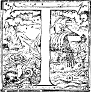
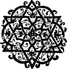
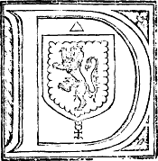
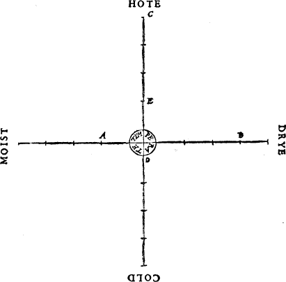
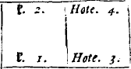
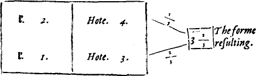
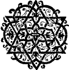

.ii
❧ The Translator to the Reader.

Here is (gentle Reader) nothing (the word of God onely set apart)
which so much beautifieth and adorneth the soule and minde of mã, as
doth the knowledge of good artes and sciences: as the knowledge of
naturall and morall Philosophie. The one setteth before our eyes, the
creatures of God, both in the heauens aboue, and in the earth beneath:
in which as in a glasse, we beholde the exceding maiestie and wisedome
of God, in adorning and beautifying them as we see: in geuing vnto them
such wonderfull and manifolde proprieties, and naturall workinges, and
that so diuersly and in such varietie: farther in maintaining and
conseruing them continually, whereby to praise and adore him, as by
S. Paule we are taught. The other teacheth vs rules and preceptes
of vertue, how, in common life amongest men, we ought to walke
vprightly: what dueties pertaine to our selues, what pertaine to the
gouernment or good order both of an housholde, and also of a citie or
common wealth. The reading likewise of histories, conduceth not a litle,
to the adorning of the soule & minde of man, a studie of all
men cõmended: by it are seene and knowen the artes and doinges of
infinite wise men gone before vs. In histories are contained infinite
examples of heroicall vertues to be of vs followed, and horrible
examples of vices to be of vs eschewed. Many other artes also there are
which beautifie the minde of man: but of all other none do more garnishe
& beautifie it, then those artes which are called Mathematicall.
Unto the knowledge of which no man can attaine, without the perfecte
knowledge and instruction of the principles, groundes, and Elementes of
Geometrie. But perfectly
||
to be instructed in them, requireth diligent studie and reading of olde
auncient authors. Amongest which, none for a beginner is to be preferred
before the most auncient Philosopher Euclide of Megara.
For of all others he hath in a true methode and iuste order, gathered
together whatsoeuer any before him had of these Elementes written:
inuenting also and adding many thinges of his owne: wherby he hath in
due forme accomplished the arte: first geuing definitions, principles,
& groundes, wherof he deduceth his Propositions or conclusions, in
such wonderfull wise, that that which goeth before, is of necessitie
required to the proufe of that which followeth. So that without the
diligent studie of Euclides Elementes, it is impossible to
attaine vnto the perfecte knowledge of Geometrie, and consequently of
any of the other Mathematicall sciences. Wherefore considering the want
& lacke of such good authors hitherto in our Englishe tounge,
lamenting also the negligence, and lacke of zeale to their countrey in
those of our nation, to whom God hath geuen both knowledge, & also
abilitie to translate into our tounge, and to publishe abroad such good
authors, and bookes (the chiefe instrumentes of all learninges): seing
moreouer that many good wittes both of gentlemen and of others of all
degrees, much desirous and studious of these artes, and seeking for them
as much as they can, sparing no paines, and yet frustrate of their
intent, by no meanes attaining to that which they seeke: I haue for
their sakes, with some charge & great trauaile, faithfully
translated into our vulgare toũge, & set abroad in Print, this booke
of Euclide. Whereunto I haue added easie and plaine declarations
and examples by figures, of the definitions. In which booke also ye
shall in due place finde manifolde additions, Scholies, Annotations, and
Inuentions: which I haue gathered out of many of the most famous &
chiefe Mathematiciẽs, both of old time, and in our age: as by diligent
reading it in course, ye shall
.iij
well perceaue. The fruite and gaine which I require for these my paines
and trauaile, shall be nothing els, but onely that thou gentle reader,
will gratefully accept the same: and that thou mayest thereby receaue
some profite: and moreouer to excite and stirre vp others learned, to do
the like, & to take paines in that behalfe. By meanes wherof, our
Englishe tounge shall no lesse be enriched with good Authors, then are
other straunge tounges: as the Dutch, French, Italian, and Spanishe: in
which are red all good authors in a maner, found amongest the Grekes or
Latines. Which is the chiefest cause, that amongest thẽ do florishe so
many cunning and skilfull men, in the inuentions of straunge and
wonderfull thinges, as in these our daies we see there do. Which fruite
and gaine if I attaine vnto, it shall encourage me hereafter, in such
like sort to translate, and set abroad some other good authors, both
pertaining to religion (as partly I haue already done)
and also pertaining to the Mathematicall Artes.
Thus gentle reader farewell.
(?¿)

[.iiij]
❧
TO THE VNFAINED LOVERS
of truthe, and constant Studentes of Noble
Sciences, IOHN DEE of London, hartily
wisheth grace from heauen, and most prosperous
successe in all their honest attemptes and
exercises.
 Iuine Plato, the great Master of many worthy Philosophers, and the constant auoucher, and pithy perswader of Vnum, Bonum, and Ens: in his Schole and Academie, sundry times (besides his ordinary Scholers) was visited of a certaine kinde of men, allured by the noble fame of Plato, and the great commendation of hys profound and profitable doctrine. But when such Hearers, after long harkening to him, perceaued, that the drift of his discourses issued out, to conclude, this Vnum, Bonum, and Ens, to be Spirituall, Infinite, Æternall, Omnipotent, &c. Nothyng beyng alledged or expressed, How, worldly goods: how, worldly dignitie: how, health, Strẽgth or lustines of body: nor yet the meanes, how a merueilous sensible and bodyly blysse and felicitie hereafter, might be atteyned: Straightway, the fantasies of those hearers, were dampt: their opinion of Plato, was clene chaunged: yea his doctrine was by them despised: and his schole, no more of them visited. Which thing, his Scholer, Aristotle, narrowly cõsidering, founde the cause therof, to be, “For that they had no forwarnyng and information, in generall,” whereto his doctrine tended. For, so, might they haue had occasion, either to haue forborne his schole hauntyng: (if they, then, had misliked his Scope and purpose) or constantly to haue continued therin: to their full satisfaction: if such his finall scope & intent, had ben to their desire. Wherfore, Aristotle, euer, after that, vsed in brief, to forewarne his owne Scholers and hearers, “both of what matter, and also to what ende, he tooke in hand to speake, or teach.” While I consider the diuerse trades of these two excellent Philosophers (and am most sure, both, that Plato right well, otherwise could teach: and that Aristotle mought boldely, with his hearers, haue dealt in like sorte as Plato did) I am in no little pang of perplexitie: Bycause, that, which I mislike, is most easy for me to performe (and to haue Plato for my exãple.) And that, which I know to be most commendable: and (in this first bringyng, into common handling, the Artes Mathematicall) to be most necessary: is full of great difficultie and sundry daungers. Yet, neither do I think it mete, for so straunge matter (as now is ment to be published) and to so straunge an audience, to be bluntly, at first, put forth, without a peculiar Preface: Nor (Imitatyng Aristotle) well can I hope, that accordyng to the amplenes and dignitie of the State Mathematicall, I am able, either playnly to prescribe the materiall boundes: or precisely to expresse the chief purposes, and most wonderfull applications therof. And though I am sure, that such as did shrinke from Plato his schole, after they had perceiued his finall || conclusion, would in these thinges haue ben his most diligent hearers (so infinitely mought their desires, in fine and at length, by our Artes Mathematicall be satisfied) yet, by this my Præface & forewarnyng, Aswell all such, may (to their great behofe) the soner, hither be allured: as also the Pythagoricall, and Platonicall perfect scholer, and the constant profound Philosopher, with more ease and spede, may (like the Bee,) gather, hereby, both wax and hony.
Wherfore, seyng I finde great occasion (for the causes alleged, and farder, in respect of my Art Mathematike generall) to vse “a certaine forewarnyng and Præface, whose content shalbe, The intent of this Preface. that mighty, most plesaunt, and frutefull Mathematicall Tree, with his chief armes and second (grifted) braunches: Both, what euery one is, and also, what commodity, in generall, is to be looked for, aswell of griff as stocke: And forasmuch as this enterprise is so great, that, to this our tyme, it neuer was (to my knowledge) by any achieued: And also it is most hard, in these our drery dayes, to such rare and straunge Artes, to wyn due and common credit:” Neuertheles, if, for my sincere endeuour to satisfie your honest expectation, you will but lend me your thãkefull mynde a while: and, to such matter as, for this time, my penne (with spede) is hable to deliuer, apply your eye or eare attentifely: perchaunce, at once, and for the first salutyng, this Preface you will finde a lesson long enough. And either you will, for a second (by this) be made much the apter: or shortly become, well hable your selues, of the lyons claw, to coniecture his royall symmetrie, and farder propertie. Now then, gentle, my frendes, and countrey men, Turne your eyes, and bend your myndes to that doctrine, which for our present purpose, my simple talent is hable to yeld you.
All thinges which are, & haue beyng, are found vnder a triple diuersitie generall. For, either, they are demed Supernaturall, Naturall, or, of a third being. Thinges Supernaturall, are immateriall, simple, indiuisible, incorruptible, & vnchangeable. Things Naturall, are materiall, compounded, diuisible, corruptible, and chaungeable. Thinges Supernaturall, are, of the minde onely, comprehended: Things Naturall, of the sense exterior, ar hable to be perceiued. In thinges Naturall, probabilitie and coniecture hath place: But in things Supernaturall, chief demõstration, & most sure Science is to be had. By which properties & comparasons of these two, more easily may be described, the state, condition, nature and property of those thinges, which, we before termed of a third being: which, by a peculier name also, are called Thynges Mathematicall. For, these, beyng (in a maner) middle, betwene thinges supernaturall and naturall: are not so absolute and excellent, as thinges supernatural: Nor yet so base and grosse, as things naturall: But are thinges immateriall: and neuerthelesse, by materiall things hable somewhat to be signified. And though their particular Images, by Art, are aggregable and diuisible: yet the generall Formes, notwithstandyng, are constant, vnchaungeable, vntrãsformable, and incorruptible. Neither of the sense, can they, at any tyme, be perceiued or iudged. Nor yet, for all that, in the royall mynde of man, first conceiued. But, surmountyng the imperfectiõ of coniecture, weenyng and opinion: and commyng short of high intellectuall cõceptiõ, are the Mercurial fruite of Dianœticall discourse, in perfect imagination subsistyng. A meruaylous newtralitie haue these thinges Mathematicall, and also a straunge participatiõ betwene thinges supernaturall, immortall, intellectual, simple and indiuisible: and thynges naturall, mortall, sensible, compounded and diuisible. Probabilitie and sensible prose, may well serue in thinges naturall: and is commendable: In Mathematicall reasoninges, a probable Argument, is nothyng regarded: nor yet the testimony of sense, any whit credited: But onely a perfect demonstration, of truthes certaine, necessary, and inuincible: vniuersally and necessaryly concluded: *.i is allowed as sufficient for “an Argument exactly and purely Mathematical.”
Of Mathematicall thinges, are two principall kindes: namely, Number, and Magnitude. Number. Number, we define, to be, a certayne Mathematicall Sũme, of Vnits. Note the worde, Vnit, to expresse the Greke Monas, & not Vnitie: as we haue all, commonly, till now, vsed. And, an Vnit, is that thing Mathematicall, Indiuisible, by participation of some likenes of whose property, any thing, which is in deede, or is counted One, may resonably be called One. We account an Vnit, a thing Mathematicall, though it be no Number, and also indiuisible: because, of it, materially, Number doth consist: which, principally, is a thing Mathematicall. Magnitude. Magnitude is a thing Mathematicall, by participation of some likenes of whose nature, any thing is iudged long, broade, or thicke. “A thicke Magnitude we call a Solide, or a Body. What Magnitude so euer, is Solide or Thicke, is also broade, & long. A broade magnitude, we call a Superficies or a Plaine. Euery playne magnitude, hath also length. A long magnitude, we terme a Line. A Line is neither thicke nor broade, but onely long: Euery certayne Line, hath two endes: A point. The endes of a line, are Pointes called. A Point, is a thing Mathematicall, indiuisible, which may haue a certayne determined situation.” If a Poynt moue from a determined situation, the way wherein it moued, is also a Line: mathematically produced, whereupon, of the auncient Mathematiciens, A Line. a Line is called the race or course of a Point. A Poynt we define, by the name of a thing Mathematicall: though it be no Magnitude, and indiuisible: because it is the propre ende, and bound of a Line: which is a true Magnitude. Magnitude. And Magnitude we may define to be that thing Mathematicall, which is diuisible for euer, in partes diuisible, long, broade or thicke. Therefore though a Poynt be no Magnitude, yet Terminatiuely, we recken it a thing Mathematicall (as I sayd) by reason it is properly the end, and bound of a line. Neither Number, nor Magnitude, haue any Materialitie. First, we will consider of Number, and of the Science Mathematicall, to it appropriate, called Arithmetike: and afterward of Magnitude, and his Science, called Geometrie. But that name contenteth me not: whereof a word or two hereafter shall be sayd. How Immateriall and free from all matter, Number is, who doth not perceaue? yea, who doth not wonderfully wõder at it? For, neither pure Element, nor Aristoteles, Quinta Essentia, is hable to serue for Number, as his propre matter. Nor yet the puritie and simplenes of Substance Spirituall or Angelicall, will be found propre enough thereto. And therefore the great & godly Philosopher Anitius Boetius, sayd: Omnia quæcunque a primæua rerum natura constructa sunt, Numerorum videntur ratione formata. Hoc enim fuit principale in animo Conditoris Exemplar. That is: All thinges (which from the very first originall being of thinges, haue bene framed and made) do appeare to be Formed by the reason of Numbers. For this was the principall example or patterne in the minde of the Creator. O comfortable allurement, O rauishing perswasion, to deale with a Science, whose Subiect, is so Auncient, so pure, so excellent, so surmounting all creatures, so vsed of the Almighty and incomprehensible wisdome of the Creator, in the distinct creation of all creatures: in all their distinct partes, properties, natures, and vertues, by order, and most absolute number, brought, from Nothing, to the Formalitie of their being and state. By Numbers propertie therefore, of vs, by all possible meanes, (to the perfection of the Science) learned, we may both winde and draw our selues into the inward and deepe search and vew, of all creatures distinct vertues, natures, properties, and Formes: And also, farder, arise, clime, ascend, and mount vp (with Speculatiue winges) in spirit, to behold in the Glas of Creation, the Forme of Formes, the Exemplar Number of all thinges Numerable: both visible and inuisible, mortall and || immortall, Corporall and Spirituall. Part of this profound and diuine Science, had Ioachim the Prophesier atteyned vnto: by Numbers Formall, Naturall, and Rationall, forseyng, concludyng, and forshewyng great particular euents, long before their comming. His bookes yet remainyng, hereof, are good profe: And the noble Earle of Mirandula, (besides that,) a sufficient witnesse: that Ioachim, in his prophesies, proceded by no other way, then by Numbers Formall. And this Earle hym selfe, in Rome, Ano. 1488. *set vp 900. Conclusions, in all kinde of Sciences, openly to be disputed of: and among the rest, in his Conclusions Mathematicall, (in the eleuenth Conclusion) hath in Latin, this English sentence. By Numbers, a way is had, to the searchyng out, and vnderstandyng of euery thyng, hable to be knowen. For the verifying of which Conclusion, I promise to aunswere to the 74. Questions, vnder written, by the way of Numbers. Which Cõclusions, I omit here to rehearse: aswell auoidyng superfluous prolixitie: as, bycause Ioannes Picus, workes, are commonly had. But, in any case, I would wish that those Conclusions were red diligently, and perceiued of such, as are earnest Obseruers and Considerers of the constant law of nũbers: which is planted in thyngs Naturall and Supernaturall: and is prescribed to all Creatures, inuiolably to be kept. For, so, besides many other thinges, in those Conclusions to be marked, it would apeare, how sincerely, & within my boundes, I disclose the wonderfull mysteries, by numbers, to be atteyned vnto.
Of my former wordes, easy it is to be gathered, that Number hath a treble state: One, in the Creator: an other in euery Creature (in respect of his complete constitution:) and the third, in Spirituall and Angelicall Myndes, and in the Soule of mã. In the first and third state, Number, is termed Number Numbryng. But in all Creatures, otherwise, Number, is termed Nũber Numbred. And in our Soule, Nũber beareth such a swaye, and hath such an affinitie therwith: that some of the old Philosophers taught, Mans Soule, to be a Number mouyng it selfe. And in dede, in vs, though it be a very Accident: yet such an Accident it is, that before all Creatures it had perfect beyng, in the Creator, Sempiternally. Number Numbryng therfore, is the discretion discerning, and distincting of thinges. But in God the Creator, This discretion, in the beginnyng, produced orderly and distinctly all thinges. For his Numbryng, then, was his Creatyng of all thinges. And his Continuall Numbryng, of all thinges, is the Conseruation of them in being: And, where and when he will lacke an Vnit: there and then, that particular thyng shalbe Discreated. Here I stay. But our Seuerallyng, distinctyng, and Numbryng, createth nothyng: but of Multitude considered, maketh certaine and distinct determination. And albeit these thynges be waighty and truthes of great importance, yet (by the infinite goodnes of the Almighty Ternarie,) Artificiall Methods and easy wayes are made, by which the zelous Philosopher, may wyn nere this Riuerish Ida, this Mountayne of Contemplation: and more then Contemplation. And also, though Number, be a thyng so Immateriall, so diuine, and æternall: yet by degrees, by litle and litle, stretchyng forth, and applying some likenes of it, as first, to thinges Spirituall: and then, bryngyng it lower, to thynges sensibly perceiued: as of a momentanye sounde iterated: then to the least thynges that may be seen, numerable: And at length, (most grossely,) to a multitude of any corporall thynges seen, or felt: and so, of these grosse and sensible thynges, we are trayned to learne a certaine Image or likenes of numbers: and to vse Arte in them to our pleasure and proffit. So grosse is our conuersation, and dull is our apprehension: while mortall Sense, in vs, ruleth the common wealth of our litle world. Hereby we say, Three Lyons, are three: or a Ternarie. Three Egles, are three, or a Ternarie. Which* Ternaries, are eche, the Vnion, knot, and Vniformitie, of three discrete and distinct Vnits. That is, we may in eche Ternarie, thrise, seuerally pointe, and shew a part, One, One, and One. Where, in Numbryng, we say One, two, *.ij Three. But how farre, these visible Ones, do differre from our Indiuisible Vnits (in pure Arithmetike, principally considered) no man is ignorant. Yet from these grosse and materiall thynges, may we be led vpward, by degrees, so, informyng our rude Imagination, toward the cõceiuyng of Numbers, absolutely (:Not supposing, nor admixtyng any thyng created, Corporall or Spirituall, to support, conteyne, or represent those Numbers imagined:) that at length, we may be hable, to finde the number of our owne name, gloriously exemplified and registred in the booke of the Trinitie most blessed and æternall.
But farder vnderstand, that vulgar Practisers, haue Numbers, otherwise, in sundry Considerations: and extend their name farder, then to Numbers, whose least part is an Vnit. For the common Logist, Reckenmaster, or Arithmeticien, in hys vsing of Numbers: of an Vnit, imagineth lesse partes: and calleth them Fractions. As of an Vnit, he maketh an halfe, and thus noteth it, ½. and so of other, (infinitely diuerse) partes of an Vnit. Yea and farder, hath, Fractions of Fractions. &c. And, forasmuch, as, Addition, Substraction, Multiplication, Diuision and Extraction of Rotes, are the chief, and sufficient partes of Arithmetike: Arithmetike. which is, the Science that demonstrateth the properties, of Numbers, and all operatiõs, in numbers to be performed: Note. “How often, therfore, these fiue sundry sortes of Operations, do, for the most part, of their execution, differre from the fiue operations of like generall property and name, in our Whole numbers practisable, So often, (for a more distinct doctrine) we, vulgarly account and name it, an other kynde of Arithmetike.” And by this reason: 1. the Consideration, doctrine, and working, in whole numbers onely: where, of an Vnit, is no lesse part to be allowed: is named (as it were) an Arithmetike by it selfe. And so of the Arithmetike of Fractions. 2. In lyke sorte, the necessary, wonderfull and Secret doctrine of Proportion, and proportionalytie hath purchased vnto it selfe a peculier maner of handlyng and workyng: and so may seme an other forme of Arithmetike. 3. Moreouer, the Astronomers, for spede and more commodious calculation, haue deuised a peculier maner of orderyng nũbers, about theyr circular motions, by Sexagenes, and Sexagesmes. By Signes, Degrees and Minutes &c. which commonly is called the Arithmetike of Astronomical or Phisicall Fractions. That, haue I briefly noted, by the name of Arithmetike Circular. Bycause it is also vsed in circles, not Astronomicall. &c. 4. Practise hath led Numbers farder, and hath framed them, to take vpon them, the shew of Magnitudes propertie: Which is Incommensurabilitie and Irrationalitie. (For in pure Arithmetike, an Vnit, is the common Measure of all Numbers.) And, here, Nũbers are become, as Lynes, Playnes and Solides: some tymes Rationall, some tymes Irrationall. And haue propre and peculier characters, (as 2√. 3√. and so of other.A Which is to signifie Rote Square, Rote Cubik: and so forth:) & propre and peculier fashions in the fiue principall partes: Wherfore the practiser, estemeth this, a diuerse Arithmetike from the other. Practise bryngeth in, here, diuerse compoundyng of Numbers: as some tyme, two, three, foure (or more) Radicall nũbers, diuersly knit, by signes, of More & Lesse: as thus 2√12 + 3√15. Or thus 4√19 + 3√12 - 2√2. &c. And some tyme with whole numbers, or fractions of whole Number, amõg them: as 20 + 2√24. 3√16 + 33 - 2√10. 4√44 + 12¼ + 3√9. And so, infinitely, may hap the varietie. After this: Both the one and the other hath fractions incident: and so is this Arithmetike greately enlarged, by diuerse exhibityng and vse of Compositions and mixtynges. Consider how, I (beyng desirous to deliuer the student from error and Cauillation) do giue to this Practise, the name of the Arithmetike of Radicall numbers: Not, of Irrationall or Surd Numbers: which other while, are Rationall: though they haue the Signe of a Rote before || them, which, Arithmetike of whole Numbers most vsuall, would say they had no such Roote: and so account them Surd Numbers: which, generally spokẽ, is vntrue: as Euclides tenth booke may teach you. Therfore to call them, generally, Radicall Numbers, (by reason of the signe √. prefixed,) is a sure way: and a sufficient generall distinction from all other ordryng and vsing of Numbers: And yet (beside all this) Consider: the infinite desire of knowledge, and incredible power of mans Search and Capacitye: how, they, ioyntly haue waded farder (by mixtyng of speculation and practise) and haue found out, and atteyned to the very chief perfection (almost) of Numbers Practicall vse. Which thing, is well to be perceiued in that great Arithmeticall Arte of Æquation: commonly called the Rule of Coss. or Algebra. The Latines termed it, Regulam Rei & Census, that is, the Rule of the thyng and his value. With an apt name: comprehendyng the first and last pointes of the worke. And the vulgar names, both in Italian, Frenche and Spanish, depend (in namyng it,) vpon the signification of the Latin word, Res: A thing: vnleast they vse the name of Algebra. And therin (commonly) is a dubble error. The one, of them, which thinke it to be of Geber his inuentyng: the other of such as call it Algebra. For, first, though Geber for his great skill in Numbers, Geometry, Astronomy, and other maruailous Artes, mought haue semed hable to haue first deuised the sayd Rule: and also the name carryeth with it a very nere likenes of Geber his name: yet true it is, that a Greke Philosopher and Mathematicien, named Diophantus, before Geber his tyme, wrote 13. bookes therof (of which, six are yet extant: and I had them to *vse, * Anno. 1550. of the famous Mathematicien, and my great frende, Petrus Montaureus:) And secondly, the very name, is Algiebar, and not Algebra: as by the Arabien Auicen, may be proued: who hath these precise wordes in Latine, by Andreas Alpagus (most perfect in the Arabik tung) so translated. Scientia faciendi Algiebar & Almachabel. i. Scientia inueniendi numerum ignotum, per additionem Numeri, & diuisionem & æquationem. Which is to say: The Science of workyng Algiebar and Almachabel, that is, the Science of findyng an vnknowen number, by Addyng of a Number, & Diuision & æquation. Here haue you the name: and also the principall partes of the Rule, touched. To name it, The rule, or Art of Æquation, doth signifie the middle part and the State of the Rule. This Rule, hath his peculier Characters: 5. and the principal partes of Arithmetike, to it appertayning, do differre from the other Arithmeticall operations. This Arithmetike, hath Nũbers Simple, Cõpound, Mixt: and Fractions, accordingly. This Rule, and Arithmetike of Algiebar, is so profound, so generall and so (in maner) conteyneth the whole power of Numbers Application practicall: that mans witt, can deale with nothyng, more proffitable about numbers: nor match, with a thyng, more mete for the diuine force of the Soule, (in humane Studies, affaires, or exercises) to be tryed in. Perchaunce you looked for, (long ere now,) to haue had some particular profe, or euident testimony of the vse, proffit and Commodity of Arithmetike vulgar, in the Common lyfe and trade of men. Therto, then, I will now frame my selfe: But herein great care I haue, least length of sundry profes, might make you deme, that either I did misdoute your zelous mynde to vertues schole: or els mistrust your hable witts, by some, to gesse much more. A profe then, foure, fiue, or six, such, will I bryng, as any reasonable man, therwith may be persuaded, to loue & honor, yea learne and exercise the excellent Science of Arithmetike.
And first: who, nerer at hand, can be a better witnesse of the frute receiued by Arithmetike, then all kynde of Marchants? Though not all, alike, either nede it, or vse it. How could they forbeare the vse and helpe of the Rule, called the Golden *.iij Rule? Simple and Compounde: both forward and backward? How might they misse Arithmeticall helpe in the Rules of Felowshyp: either without tyme, or with tyme? and betwene the Marchant & his Factor? The Rules of Bartering in wares onely: or part in wares, and part in money, would they gladly want? Our Marchant venturers, and Trauaylers ouer Sea, how could they order their doynges iustly and without losse, vnleast certaine and generall Rules for Exchaũge of money, and Rechaunge, were, for their vse, deuised? The Rule of Alligation, in how sundry cases, doth it conclude for them, such precise verities, as neither by naturall witt, nor other experience, they, were hable, els, to know? And (with the Marchant then to make an end) how ample & wonderfull is the Rule of False positions? especially as it is now, by two excellent Mathematiciens (of my familier acquayntance in their life time) enlarged? I meane Gemma Frisius, and Simon Iacob. Who can either in brief conclude, the generall and Capitall Rules? or who can Imagine the Myriades of sundry Cases, and particular examples, in Act and earnest, continually wrought, tried and concluded by the forenamed Rules, onely? How sundry other Arithmeticall practises, are commonly in Marchantes handes, and knowledge: They them selues, can, at large, testifie.
The Mintmaster, and Goldsmith, in their Mixture of Metals, either of diuerse kindes, or diuerse values: how are they, or may they, exactly be directed, and meruailously pleasured, if Arithmetike be their guide? And the honorable Phisiciãs, will gladly confesse them selues, much beholding to the Science of Arithmetike, and that sundry wayes: But chiefly in their Art of Graduation, and compounde Medicines. And though Galenus, Auerrois, Arnoldus, Lullus, and other haue published their positions, aswell in the quantities of the Degrees aboue Temperament, as in the Rules, concluding the new Forme resulting: yet a more precise, commodious, and easy Method, is extant: by a Countreyman of ours R. B. (aboue 200. yeares ago) inuented. And forasmuch as I am vncertaine, who hath the same: or when that litle Latin treatise, (as the Author writ it,) shall come to be Printed: (Both to declare the desire I haue to pleasure my Countrey, wherin I may: and also, for very good profe of Numbers vse, in this most subtile and frutefull, Philosophicall Conclusion,) I entend in the meane while, most briefly, and with my farder helpe, to communicate the pith therof vnto you.
First describe a circle: whose diameter let be an inch. Diuide the Circumference into foure equall partes. Frõ the Center, by those 4. sections, extend 4. right lines: eche of 4. inches and a halfe long: or of as many as you liste, aboue 4. without the circumference of the circle: So that they shall be of 4. inches long (at the least) without the Circle. Make good euident markes, at euery inches end. If you list, you may subdiuide the inches againe into 10. or 12. smaller partes, equall. At the endes of the lines, write the names of the 4. principall elementall Qualities. Hote and Colde, one against the other. And likewise Moyst and Dry, one against the other. And in the Circle write Temperate. Which Temperature hath a good Latitude: as appeareth by the Complexion of man. And therefore we haue allowed vnto it, the foresayd Circle: and not a point Mathematicall or Physicall.B

* Take some part of Lullus counsayle in his booke de Q. Essentia.Now, when you haue two thinges Miscible, whose degrees are * truely knowen: Of necessitie, either they are of one Quantitie and waight, or of diuerse. If they be of one Quantitie and waight: whether their formes, be Contrary Qualities, or of one kinde (but of diuerse intentions and degrees) or a Temperate, and a Contrary, The forme resulting of their Mixture, is in the Middle betwene the degrees of || the formes mixt. As for example, let A, be Moist in the first degree: and B, Dry in the third degree. Adde 1. and 3. that maketh 4: the halfe or middle of 4. is 2. This 2. is the middle, equally distant from A and B (for the * Note. *Temperament is counted none. And for it, you must put a Ciphre, if at any time, it be in mixture). Counting then from B, 2. degrees, toward A: you finde it to be Dry in the first degree: So is the Forme resulting of the Mixture of A, and B, in our example. I will geue you an other example. Suppose, you haue two thinges, as C, and D: and of C, the Heate to be in the 4. degree: and of D, the Colde, to be remisse, euen vnto the Temperament. Now, for C, you take 4: and for D, you take a Ciphre: which, added vnto 4, yeldeth onely 4. The middle, or halfe, whereof, is 2. Wherefore the Forme resulting of C, and D, is Hote in the second degree: for, 2. degrees, accounted from C, toward D, ende iuste in the 2. degree of heate. Of the third maner, I will geue also an example: which let be this: Note. I haue a liquid Medicine whose Qualitie of heate is in the 4. degree exalted: as was C, in the example foregoing: and an other liquid Medicine I haue: whose Qualitie, is heate, in the first degree. Of eche of these, I mixt a like quantitie: Subtract here, the lesse frõ the more: and the residue diuide into two equall partes: whereof, the one part, either added to the lesse, or subtracted from the higher degree, doth produce the degree of the *.iiij Forme resulting, by this mixture of C, and E. As, if from 4. ye abate 1. there resteth 3. the halfe of 3. is 1½: Adde to 1. this 1½: you haue 2½. Or subtract from 4. this 1½: you haue likewise 2½ remayning. Which declareth, the Forme resulting, to be Heate, in the middle of the third degree.
“ The Second Rule. But if the Quantities of two thinges Commixt, be diuerse, and the Intensions (of their Formes Miscible) be in diuerse degrees, and heigthes. (Whether those Formes be of one kinde, or of Contrary kindes, or of a Temperate and a Contrary, What proportion is of the lesse quantitie to the greater, the same shall be of the difference, which is betwene the degree of the Forme resulting, and the degree of the greater quantitie of the thing miscible, to the difference, which is betwene the same degree of the Forme resulting, and the degree of the lesse quantitie. As for example. Let two pound of Liquor be geuen, hote in the 4. degree: & one pound of Liquor be geuen, hote in the third degree.” I would gladly know the Forme resulting, in the Mixture of these two Liquors. Set downe your nũbers in order, thus.  Now by the rule of Algiebar, haue I deuised a very easie, briefe, and generall maner of working in this case. Let vs first, suppose that Middle Forme resulting, to be 1X: as that Rule teacheth. And because (by our Rule, here geuen) as the waight of 1. is to 2: So is the difference betwene 4. (the degree of the greater quantitie) and 1X: to the difference betwene 1X and 3: (the degree of the thing, in lesse quãtitie. And with all, 1X, being alwayes in a certaine middell, betwene the two heigthes or degrees). For the first difference, I set 4-1X: and for the second, I set 1X-3. And, now againe, I say, as 1. is to 2. so is 4-1X to 1X-3. Wherfore, of these foure proportionall numbers, the first and the fourth Multiplied, one by the other, do make as much, as the second and the third Multiplied the one by the other. Let these Multiplications be made accordingly. And of the first and the fourth, we haue 1X-3. and of the second & the third, 8-2X. Wherfore, our Æquation is betwene 1X-3: and 8-2X. Which may be reduced, according to the Arte of Algiebar: as, here, adding 3. to eche part, geueth the Æquation, thus, 1X=11-2X. And yet againe, contracting, or Reducing it: Adde to eche part, 2X: Then haue you 3X æquall to 11: thus represented 3X=11. Wherefore, diuiding 11. by 3: the Quotient is 3⅔: the Valew of our 1X, Coss, or Thing, first supposed. And that is the heigth, or Intension of the Forme resulting: which is, Heate, in two thirdes of the fourth degree: And here I set the shew of the worke in conclusion, thus. The proufe hereof is easie: by subtracting 3. from 3⅔,  resteth ⅔. Subtracte the same heigth of the Forme resulting, (which is 3⅔) frõ 4: then resteth ⅓: You see, that ⅔ is double to ⅓: as 2.P. is double to 1.P. So should it be: by the rule here geuen. Note. As you added to eche part of the Æquation, 3: so if ye first added to eche part 2X, it would stand, 3X-3=8. And now adding to eche part 3: you haue (as afore) 3X=11.
And though I, here, speake onely of two thyngs Miscible: and most commonly mo then three, foure, fiue or six, (&c.) are to be Mixed: (and in one Compound || to be reduced: & the Forme resultyng of the same, to serue the turne) yet these Rules are sufficient: duely repeated and iterated. Note. In procedyng first, with any two: and then, with the Forme Resulting, and an other: & so forth: For, the last worke, concludeth the Forme resultyng of them all: I nede nothing to speake, of the Mixture (here supposed) what it is. Common Philosophie hath defined it, saying, Mixtio est miscibilium, alteratorum, per minima coniunctorum, Vnio. Euery word in the definition, is of great importance. I nede not also spend any time, to shew, how, the other manner of distributing of degrees, doth agree to these Rules. Neither nede I of the farder vse belonging to the Crosse of Graduation (before described) in this place declare, vnto such as are capable of that, which I haue all ready sayd. Neither yet with examples specifie the Manifold varieties, by the foresayd two generall Rules, to be ordered. The witty and Studious, here, haue sufficient: And they which are not hable to atteine to this, without liuely teaching, and more in particular: would haue larger discoursing, then is mete in this place to be dealt withall: And other (perchaunce) with a proude snuffe will disdaine this litle: and would be vnthankefull for much more. I, therfore conclude: and wish such as haue modest and earnest Philosophicall mindes, to laude God highly for this: and to Meruayle, that the profoundest and subtilest point, concerning Mixture of Formes and Qualities Naturall, is so Matcht and maryed with the most simple, easie, and short way of the noble Rule of Algiebar. Who can remaine, therfore vnpersuaded, to loue, alow, and honor the excellent Science of Arithmetike? For, here, you may perceiue that the litle finger of Arithmetike, is of more might and contriuing, then a hunderd thousand mens wittes, of the middle sorte, are hable to perfourme, or truely to conclude, with out helpe thereof.
Now will we farder, by the wise and valiant Capitaine, be certified, what helpe he hath, by the Rules of Arithmetike: in one of the Artes to him appertaining: And of the Grekes named Τακτικὴ. Τακτικὴ. “That is, the Skill of Ordring Souldiers in Battell ray after the best maner to all purposes.” This Art so much dependeth vppon Numbers vse, and the Mathematicals, that Ælianus (the best writer therof,) in his worke, to the Emperour Hadrianus, by his perfection, in the Mathematicals, (beyng greater, then other before him had,) thinketh his booke to passe all other the excellent workes, written of that Art, vnto his dayes. For, of it, had written Æneas: Cyneas of Thessaly: Pyrrhus Epirota: and Alexander his sonne: Clearchus: Pausanias: Euangelus: Polybius, familier frende to Scipio: Eupolemus: Iphicrates, Possidonius: and very many other worthy Capitaines, Philosophers and Princes of Immortall fame and memory: Whose fayrest floure of their garland (in this feat) was Arithmetike: and a litle perceiuerance, in Geometricall Figures. But in many other cases doth Arithmetike stand the Capitaine in great stede. As in proportionyng of vittayles, for the Army, either remaining at a stay: or suddenly to be encreased with a certaine number of Souldiers: and for a certain tyme. Or by good Art to diminish his company, to make the victuals, longer to serue the remanent, & for a certaine determined tyme: if nede so require. And so in sundry his other accountes, Reckeninges, Measurynges, and proportionynges, the wise, expert, and Circumspect Capitaine will affirme the Science of Arithmetike, to be one of his chief Counsaylors, directers and aiders. Which thing (by good meanes) was euident to the Noble, the Couragious, the loyall, and Curteous Iohn, late Earle of Warwicke. Who was a yong Gentleman, throughly knowne to very few. Albeit his lusty valiantnes, force, and Skill in Chiualrous feates and exercises: his humblenes, and frendelynes to all men, were thinges, openly, of the world perceiued. But what rotes (otherwise,) vertue had fastened in his brest, what Rules of godly and honorable a.j life he had framed to him selfe: what vices, (in some then liuing) notable, he tooke great care to eschew: what manly vertues, in other noble men, (florishing before his eyes,) he Sythingly aspired after: what prowesses he purposed and ment to achieue: with what feats and Artes, he began to furnish and fraught him selfe, for the better seruice of his Kyng and Countrey, both in peace & warre. These (I say) his Heroicall Meditations, forecastinges and determinations, no twayne, (I thinke) beside my selfe, can so perfectly, and truely report. And therfore, in Conscience, I count it my part, for the honor, preferment, & procuring of vertue (thus, briefly) to haue put his Name, in the Register of Fame Immortall.
To our purpose. This Iohn, by one of his actes (besides many other: both in England and Fraunce, by me, in him noted.) did disclose his harty loue to vertuous Sciences: and his noble intent, to excell in Martiall prowesse: When he, with humble request, and instant Solliciting: got the best Rules (either in time past by Greke or Romaine, or in our time vsed: and new Stratagemes therin deuised) for ordring of all Companies, summes and Numbers of mẽ, (Many, or few) with one kinde of weapon, or mo, appointed: with Artillery, or without: on horsebacke, or on fote: to giue, or take onset: to seem many, being few: to seem few, being many. To marche in battaile or Iornay: with many such feates, to Foughten field, Skarmoush, or Ambushe appartaining: This noble Earle, dyed Anno. 1554. skarse of 24. yeares of age: hauing no issue by his wife: Daughter to the Duke of Somerset. And of all these, liuely designementes (most curiously) to be in velame parchement described: with Notes & peculier markes, as the Arte requireth: and all these Rules, and descriptions Arithmeticall, inclosed in a riche Case of Gold, he vsed to weare about his necke: as his Iuell most precious, and Counsaylour most trusty. Thus, Arithmetike, of him, was shryned in gold: Of Numbers frute, he had good hope. Now, Numbers therfore innumerable, in Numbers prayse, his shryne shall finde.
What nede I, (for farder profe to you) of the Scholemasters of Iustice, to require testimony: how nedefull, how frutefull, how skillfull a thing Arithmetike is? I meane, the Lawyers of all sortes. Vndoubtedly, the Ciuilians, can meruaylously declare: how, neither the Auncient Romaine lawes, without good knowledge of Numbers art, can be perceiued: Nor (Iustice in infinite Cases) without due proportion, (narrowly considered,) is hable to be executed. How Iustly, & with great knowledge of Arte, did Papinianus institute a law of partition, and allowance, betwene man and wife after a diuorce? But how Accursius, Baldus, Bartolus, Iason, Alexander, and finally Alciatus, (being otherwise, notably well learned) do iumble, gesse, and erre, from the æquity, art and Intent of the lawmaker: Arithmetike can detect, and conuince: and clerely, make the truth to shine. Good Bartolus, tyred in the examining & proportioning of the matter: and with Accursius Glosse, much cumbred: burst out, and sayd: Nulla est in toto libro, hac glossa difficilior: Cuius computationem nec Scholastici nec Doctores intelligunt. &c. That is: In the whole booke, there is no Glosse harder then this: Whose accoumpt or reckenyng, neither the Scholers, nor the Doctours vnderstand. &c. What can they say of Iulianus law, Si ita Scriptum. &c. Of the Testators will iustly performing, betwene the wife, Sonne and daughter? How can they perceiue the æquitie of Aphricanus, Arithmeticall Reckening, where he treateth of Lex Falcidia? How can they deliuer him, from his Reprouers: and their maintainers: as Ioannes, Accursius Hypolitus and Alciatus? How Iustly and artificially, was Africanus reckening made? Proportionating to the Sommes bequeathed, the Contributions of eche part? Namely, for the hundred presently receiued, 17 1/7. And for the hundred, receiued after ten monethes, 12 6/7: which make the 30: which were to be cõtributed by the legataries to the heire. || For, what proportion, 100 hath to 75: the same hath 17 1/7 to 12 6/7: Which is Sesquitertia: that is, as 4, to 3. which make 7. Wonderfull many places, in the Ciuile law, require an expert Arithmeticien, to vnderstand the deepe Iudgemẽt, & Iust determinatiõ of the Auncient Romaine Lawmakers. But much more expert ought he to be, who should be hable, to decide with æquitie, the infinite varietie of Cases, which do, or may happen, vnder euery one of those lawes and ordinances Ciuile. Hereby, easely, ye may now coniecture: that in the Canon law: and in the lawes of the Realme (which with vs, beare the chief Authoritie), Iustice and equity might be greately preferred, and skilfully executed, through due skill of Arithmetike, and proportions appertainyng. The worthy Philosophers, and prudent lawmakers (who haue written many bookes De Republica: How the best state of Common wealthes might be procured and mainteined,) haue very well determined of Iustice: (which, not onely, is the Base and foundacion of Common weales: but also the totall perfection of all our workes, words, and thoughtes:) defining it, Iustice. “to be that vertue, by which, to euery one, is rendred, that to him appertaineth.” God challengeth this at our handes, to be honored as God: to be loued, as a father: to be feared as a Lord & master. Our neighbours proportiõ, is also prescribed of the Almighty lawmaker: which is, to do to other, euen as we would be done vnto. These proportions, are in Iustice necessary: in duety, commendable: and of Common wealthes, the life, strength, stay and florishing. Aristotle in his Ethikes (to fatch the sede of Iustice, and light of direction, to vse and execute the same) was fayne to fly to the perfection, and power of Numbers: for proportions Arithmeticall and Geometricall. Plato in his booke called Epinomis (which boke, is the Threasury of all his doctrine) where, his purpose is, to seke a Science, which, when a man had it, perfectly: he might seme, and so be, in dede, Wise. He, briefly, of other Sciences discoursing, findeth them, not hable to bring it to passe: But of the Science of Numbers, he sayth. Illa, quæ numerum mortalium generi dedit, id profecto efficiet. Deum autem aliquem, magis quam fortunam, ad salutem nostram, hoc munus nobis arbitror contulisse. &c. Nam ipsum bonorum omnium Authorem, cur non maximi boni, Prudentiæ dico, causam arbitramur? That Science, verely, which hath taught mankynde number, shall be able to bryng it to passe. And, I thinke, a certaine God, rather then fortune, to haue giuen vs this gift, for our blisse. For, why should we not Iudge him, who is the Author of all good things, to be also the cause of the greatest good thyng, namely, Wisedome? There, at length, he proueth Wisedome to be atteyned, by good Skill of Numbers. With which great Testimony, and the manifold profes, and reasons, before expressed, you may be sufficiently and fully persuaded: of the perfect Science of Arithmetike, to make this accounte: That of all Sciences, next to Theologie, it is most diuine, most pure, most ample and generall, most profounde, most subtile, most commodious and most necessary. Whose next Sister, is the Absolute Science of Magnitudes: of which (by the Direction and aide of him, whose Magnitude is Infinite, and of vs Incomprehensible) I now entend, so to write, that both with the Multitude, and also with the Magnitude of Meruaylous and frutefull verities, you (my frendes and Countreymen) may be stird vp, and awaked, to behold what certaine Artes and Sciences, (to our vnspeakable behofe) our heauenly father, hath for vs prepared, and reuealed, by sundry Philosophers and Mathematiciens.
Both, Number and Magnitude, haue a certaine Originall
sede, (as it were) of an incredible property: and of man, neuer hable,
Fully, to be declared. Of Number, an Vnit, and of
Magnitude, a Poynte, doo seeme to be much like Originall
a.ij
causes: But the diuersitie neuerthelesse, is great. We defined an
Vnit, to be a thing Mathematicall Indiuisible: A Point,
likewise, we sayd to be a Mathematicall thing Indiuisible. And farder,
that a Point may haue a certaine determined Situation: that is, that we
may assigne, and prescribe a Point, to be here, there, yonder. &c.
Herein, (behold) our Vnit is free, and can abyde no bondage, or to be
tyed to any place, or seat: diuisible or indiuisible. Agayne, by reason,
a Point may haue a Situation limited to him: a certaine
motion, therfore (to a place, and from a place) is to a Point incident
and appertainyng. But an Vnit, can not be imagined to haue any
motion. A Point, by his motion, produceth, Mathematically,
a line: (as we sayd before) which is the first kinde of Magnitudes,
and most simple: An Vnit, can not produce any number.
A Line, though it be produced of a Point moued, yet, it doth not
consist of pointes: Number, though it be not produced of an Vnit,
yet doth it Consist of vnits, as a materiall cause. But formally,
Number.
Number, is the Vnion, and Vnitie of Vnits. Which vnyting and knitting,
is the workemanship of our minde: which, of distinct and discrete Vnits,
maketh a Number: by vniformitie, resulting of a certaine multitude of
Vnits. And so, euery number, may haue his least part, giuen: namely, an
Vnit: But not of a Magnitude, (no, not of a Lyne,) the least part can be
giuẽ: by cause, infinitly, diuision therof, may be conceiued. All
Magnitude, is either a Line, a Plaine, or a Solid. Which Line,
Plaine, or Solid, of no Sense, can be perceiued, nor exactly by hãd (any
way) represented: nor of Nature produced: But, as (by degrees) Number
did come to our perceiuerance: So, by visible formes, we are holpen to
imagine, what our Line Mathematicall, is. What our Point, is. So
precise, are our Magnitudes, that one Line is no broader then an other:
for they haue no bredth: Nor our Plaines haue any thicknes. Nor yet our
Bodies, any weight: be they neuer so large of dimensiõ. Our Bodyes, we
can haue Smaller, then either Arte or Nature can produce any: and
Greater also, then all the world can comprehend. Our least Magnitudes,
can be diuided into so many partes, as the greatest. As, a Line of
an inch long, (with vs) may be diuided into as many partes, as may the
diameter of the whole world, from East to West: or any way extended:
What priuiledges, aboue all manual Arte, and Natures might, haue our two
Sciences Mathematicall? to exhibite, and to deale with thinges of such
power, liberty, simplicity, puritie, and perfection? And in them, so
certainly, so orderly, so precisely to procede: as, excellent is that
workemã Mechanicall Iudged, who nerest can approche to the representing
of workes, Mathematically demonstrated?
And our two Sciences, remaining pure, and absolute, in their proper
termes, and in their owne Matter: to haue, and allowe, onely such
Demonstrations, as are plaine, certaine, vniuersall, and of an æternall
veritye?
Geometrie.
This Science of Magnitude, his properties, conditions, and
appertenances: commonly, now is, and from the beginnyng, hath of all
Philosophers, ben called Geometrie. But, veryly, with a name to
base and scant, for a Science of such dignitie and amplenes. And,
perchaunce, that name, by cõmon and secret consent, of all wisemen,
hitherto hath ben suffred to remayne: that it might carry with it a
perpetuall memorye, of the first and notablest benefite, by that
Science, to common people shewed: Which was, when Boundes and meres of
land and ground were lost, and confounded (as in Egypt, yearely,
with the ouerflowyng of Nilus, the greatest and longest riuer in
the world) or, that ground bequeathed, were to be assigned: or, ground
sold, were to be layd out: or (when disorder preuailed) that Commõs were
distributed into seueralties. For, where, vpon these & such like
occasiõs, Some by ignorãce, some by negligẽce, Some by fraude, and some
by violence, did wrongfully limite, measure, encroach, or challenge (by
||
pretence of iust content, and measure) those landes and groundes: great
losse, disquietnes, murder, and warre did (full oft) ensue: Till, by
Gods mercy, and mans Industrie, The perfect Science of Lines, Plaines,
and Solides (like a diuine Iusticier,) gaue vnto euery man, his owne.
The people then, by this art pleasured, and greatly relieued, in their
landes iust measuring: & other Philosophers, writing Rules for land
measuring: betwene them both, thus, confirmed the name of
Geometria, that is, (according to the very etimologie of the
word) Land measuring. Wherin, the people knew no farder, of Magnitudes
vse, but in Plaines: and the Philosophers, of thẽ, had no feet hearers,
or Scholers: farder to disclose vnto, then of flat, plaine
Geometrie. And though, these Philosophers, knew of farder vse,
and best vnderstode the etymologye of the worde, yet this name
Geometria, was of them applyed generally to all sortes of
Magnitudes: vnleast, otherwhile, of Plato, and Pythagoras:
When they would precisely declare their owne doctrine. Then, was
* Plato. 7. de Rep.
*Geometria, with them, Studium quod circa planum versatur.
But, well you may perceiue by Euclides Elementes, that more ample
is our Science, then to measure Plaines: and nothyng lesse therin is
tought (of purpose) then how to measure Land. An other name, therfore,
must nedes be had, for our Mathematicall Science of Magnitudes: which
regardeth neither clod, nor turff: neither hill, nor dale: neither earth
nor heauen: but is absolute Megethologia: not creping on ground,
and dasseling the eye, with pole perche, rod or lyne: but “liftyng the hart aboue the heauens, by inuisible
lines, and
immortall beames meteth with the reflexions, of the light
incomprehensible: and so procureth Ioye, and perfection
vnspeakable.” Of which true vse of our
Megethica, or Megethologia, Diuine Plato seemed to
haue good taste, and iudgement: and (by the name of Geometrie) so
noted it: and warned his Scholers therof: as, in hys seuenth
Dialog, of the Common wealth, may euidently be sene. Where (in
Latin) thus it is: right well translated: Profecto, nobis hoc non
negabunt, Quicunque vel paululum quid Geometriæ gustârunt,
quin hæc Scientia, contrà, omnino se habeat, quàm de ea loquuntur, qui
in ipsa versantur. In English, thus. Verely (sayth Plato) whosoeuer haue, (but euen very litle) tasted of Geometrie,
will not denye vnto vs, this: but that this Science, is of an other
condicion, quite contrary to that, which they that are exercised in it,
do speake of it. And there it followeth, of our
Geometrie, Quòd quæritur cognoscendi illius gratia, quod
semper est, non & eius quod oritur quandoque &
interit. Geometria, eius quod est semper, Cognitio est. Attollet igitur
(ô Generose vir) ad Veritatem, animum: atque ita, ad
Philosophandum preparabit cogitationem, vt ad supera conuertamus: quæ,
nunc, contra quàm decet, ad inferiora deijcimus. &c. Quàm maximè
igitur præcipiendum est, vt qui præclarissimam hanc habitãt Civitatem,
nullo modo, Geometriam spernant. Nam & quæ præter ipsius propositum,
quodam modo esse videntur, haud exigua sunt. &c. It must nedes
be confessed (saith Plato) That [Geometrie] is
learned, for the knowyng of that, which is euer: and not of that, which,
in tyme, both is bred and is brought to an ende. &c. Geometrie is
the knowledge of that which is euerlastyng. It will lift vp therfore
(O Gentle Syr) our mynde to the Veritie: and by that meanes, it
will prepare the Thought, to the Philosophicall loue of wisdome: that we
may turne or conuert, toward heauenly thinges [both mynde and thought] which now, otherwise then becommeth vs, we cast down on base
or inferior things. &c. Chiefly, therfore, Commaundement must be
giuen, that such as do inhabit this most honorable Citie, by no meanes,
despise Geometrie. For euen those thinges [done by it] which, in
manner, seame to be, beside the purpose of Geometrie: are of
a.iij
no small importance. &c. And
besides the manifold vses of Geometrie, in matters appertainyng
to warre, he addeth more, of second vnpurposed frute, and commoditye,
arrising by Geometrie: saying: Scimus quin etiam, ad
Disciplinas omnes facilius per discendas, interesse omnino, attigerit ne
Geometriam aliquis, an non. &c. Hanc ergo Doctrinam, secundo loco
discendam Iuuenibus statuamus. That is. But, also, we know, that for the more easy learnyng of all
Artes, it importeth much, whether one haue any knowledge in Geometrie,
or no. &c. Let vs therfore make an ordinance or decree, that this
Science, of young men shall be learned in the second place.
This was Diuine Plato his Iudgement, both of the purposed, chief,
and perfect vse of Geometrie: and of his second, dependyng,
deriuatiue commodities. And for vs, Christen men, a thousand
thousand mo occasions are, to haue nede of the helpe of*
I. D.
* Herein, I would gladly shake of, the earthly name, of
Geometrie.
Megethologicall Contemplations: wherby, to trayne our
Imaginations and Myndes, by litle and litle, to forsake and abandon, the
grosse and corruptible Obiectes, of our vtward senses: and to apprehend,
by sure doctrine demonstratiue, Things Mathematicall. And by them,
readily to be holpen and conducted to conceiue, discourse, and conclude
of things Intellectual, Spirituall, æternall, and such as concerne our
Blisse euerlasting: which, otherwise (without Speciall priuiledge of
Illumination, or Reuelation frõ heauen) No mortall mans wyt (naturally)
is hable to reach vnto, or to Compasse. And, veryly, by my small Talent
(from aboue) I am hable to proue and testifie, that the litterall
Text, and order of our diuine Law, Oracles, and Mysteries, require more
skill in Numbers, and Magnitudes: then (commonly) the expositors haue
vttered: but rather onely (at the most) so warned: & shewed their
own want therin. (To name any, is nedeles: and to note the places, is,
here, no place: But if I be duely asked, my answere is ready.) And
without the litterall, Grammaticall, Mathematicall or Naturall verities
of such places, by good and certaine Arte, perceiued, no Spirituall
sense (propre to those places, by Absolute Theologie) will
thereon depend.
“No man, therfore, can doute, but
toward the atteyning of knowledge incomparable, and Heauenly Wisedome:
Mathematicall Speculations, both of Numbers and Magnitudes: are meanes,
aydes, and guides: ready, certaine, and necessary.” From henceforth, in this my Preface, will I frame
my talke, to Plato his fugitiue Scholers: or, rather, to such,
who well can, (and also wil,) vse their vtward senses, to the glory of
God, the benefite of their Countrey, and their owne secret contentation,
or honest preferment, on this earthly Scaffold. To them, I will
orderly recite, describe & declare a great Number of Artes, from our
two Mathematicall fountaines, deriued into the fieldes of Nature.
Wherby, such Sedes, and Rotes, as lye depe hyd in the groũd of
Nature, are refreshed, quickened, and prouoked to grow, shote vp,
floure, and giue frute, infinite, and incredible. And these Artes,
shalbe such, as vpon Magnitudes properties do depende, more, then vpon
Number. And by good reason we may call them Artes, and Artes
Mathematicall Deriuatiue: for (at this tyme) I Define
An Arte.
An Arte, to be a Methodicall cõplete Doctrine,
hauing abundancy of sufficient, and peculier matter to deale with, by
the allowance of the Metaphisicall Philosopher: the knowledge whereof,
to humaine state is necessarye. And that I account,
Art Mathematicall Deriuatiue.
An Art Mathematicall deriuatiue, which by
Mathematicall demonstratiue Method, in Nũbers, or Magnitudes, ordreth
and confirmeth his doctrine, as much & as perfectly, as the matter
subiect will admit. And for that,
||
I entend to vse the name and propertie of a
A Mechanitien.
Mechanicien, otherwise, then (hitherto) it hath ben vsed,
I thinke it good, (for distinction sake) to giue you also a brief
description, what I meane therby. A Mechanicien,
or a Mechanicall workman is he, whose skill is, without knowledge of
Mathematicall demonstration, perfectly to worke and finishe any sensible
worke, by the Mathematicien principall or deriuatiue, demonstrated or
demonstrable. Full well I know, that he which inuenteth, or
maketh these demonstrations, is generally called A speculatiue
Mechanicien: which differreth nothyng from a Mechanicall
Mathematicien. So, in respect of diuerse actions, one man may haue
the name of sundry artes: as, some tyme, of a Logicien, some tymes (in
the same matter otherwise handled) of a Rethoricien. Of these trifles,
I make, (as now, in respect of my Preface,) small account: to fyle
thẽ for the fine handlyng of subtile curious disputers. In other places,
they may commaunde me, to giue good reason: and yet, here, I will
not be vnreasonable.
1. First, then, from the puritie, absolutenes, and Immaterialitie of Principall Geometrie, is that kinde of Geometrie deriued, which vulgarly is counted Geometrie: and is the Arte of Measuring sensible magnitudes, their iust quãtities and contentes. Geometrie vulgar. This, teacheth to measure, either at hand: and the practiser, to be by the thing Measured: and so, by due applying of Cumpase, Rule, Squire, Yarde, Ell, Perch, Pole, Line, Gaging rod, (or such like instrument) to the Length, Plaine, or Solide measured, 1. *to be certified, either of the length, perimetry, or distance lineall: and this is called, Mecometrie. Or 2. *to be certified of the content of any plaine Superficies: whether it be in ground Surueyed, Borde, or Glasse measured, or such like thing: which measuring, is named Embadometrie. 3. *Or els to vnderstand the Soliditie, and content of any bodily thing: as of Tymber and Stone, or the content of Pits, Pondes, Wells, Vessels, small & great, of all fashions. Where, of Wine, Oyle, Beere, or Ale vessells, &c, the Measuring, commonly, hath a peculier name: and is called Gaging. And the generall name of these Solide measures, is Stereometrie. 2. Or els, this vulgar Geometrie, hath consideration to teach the practiser, how to measure things, with good distance betwene him and the thing measured: and to vnderstand thereby, either 1. *how Farre, a thing seene (on land or water) is from the measurer: and this may be called Apomecometrie: 2. Or, how High or depe, aboue or vnder the leuel of the measurers stãding, any thing is, which is sene on land or water, called Hypsometrie. 3. *Or, it informeth the measurer, how Broad any thing is, which is in the measurers vew: so it be on Land or Water, situated: and may be called Platometrie. Though I vse here to condition, the thing measured, to be on Land, or Water Situated: Note. yet, know for certaine, that the sundry heigthe of Cloudes, blasing Starres, and of the Mone, may (by these meanes) haue their distances from the earth: and, of the blasing Starres and Mone, the Soliditie (aswell as distances) to be measured: But because, neither these things are vulgarly taught: nor of a common practiser so ready to be executed: I, rather, let such measures be reckened incident to some of our other Artes, dealing with thinges on high, more purposely, then this vulgar Land measuring Geometrie doth: as in Perspectiue and Astronomie, &c.
OF these Feates (farther applied) is Sprong the Feate of Geodesie, or Land Measuring: more cunningly to measure & Suruey Land, Woods, and Waters, a farre of. More cunningly, I say: But God knoweth (hitherto) in these Realmes of England and Ireland (whether through ignorance or fraude, I can not tell, in euery particular) Note. how great wrong and iniurie hath (in my time) bene committed a.iij by vntrue measuring and surueying of Land or Woods, any way. And, this I am sure: that the Value of the difference, betwene the truth and such Surueyes, would haue bene hable to haue foũd (for euer) in eche of our two Vniuersities, an excellent Mathematicall Reader: to eche, allowing (yearly) a hundred Markes of lawfull money of this realme: which, in dede, would seme requisit, here, to be had (though by other wayes prouided for) as well, as, the famous Vniuersitie of Paris, hath two Mathematicall Readers: and eche, two hundreth French Crownes yearly, of the French Kinges magnificent liberalitie onely. Now, againe, to our purpose returning: Moreouer, of the former knowledge Geometricall, are growen the Skills of Geographie, Chorographie, Hydrographie, and Stratarithmetrie.
“ Geographie teacheth wayes, by which, in sũdry formes, (as Sphærike, Plaine or other), the Situation of Cities, Townes, Villages, Fortes, Castells, Mountaines, Woods, Hauens, Riuers, Crekes, & such other things, vpõ the outface of the earthly Globe (either in the whole, or in some principall mẽber and portion therof cõtayned) may be described and designed, in cõmensurations Analogicall to Nature and veritie: and most aptly to our vew, may be represented.” Of this Arte how great pleasure, and how manifolde commodities do come vnto vs, daily and hourely: of most men, is perceaued. While, some, to beautifie their Halls, Parlers, Chambers, Galeries, Studies, or Libraries with: other some, for thinges past, as battels fought, earthquakes, heauenly fyringes, & such occurentes, in histories mentioned: therby liuely, as it were, to vewe the place, the region adioyning, the distance from vs: and such other circumstances. Some other, presently to vewe the large dominion of the Turke: the wide Empire of the Moschouite: and the litle morsell of ground, where Christendome (by profession) is certainly knowen. Litle, I say, in respecte of the rest. &c. Some, either for their owne iorneyes directing into farre landes: or to vnderstand of other mens trauailes. To conclude, some, for one purpose: and some, for an other, liketh, loueth, getteth, and vseth, Mappes, Chartes, & Geographicall Globes. Of whose vse, to speake sufficiently, would require a booke peculier.
Chorographie seemeth to be an vnderling, and a twig, of Geographie: and yet neuerthelesse, is in practise manifolde, and in vse very ample. “This teacheth Analogically to describe a small portion or circuite of ground, with the contentes: not regarding what commensuration it hath to the whole, or any parcell, without it, contained. But in the territory or parcell of ground which it taketh in hand to make description of, it leaueth out (or vndescribed) no notable, or odde thing, aboue the ground visible. Yea and sometimes, of thinges vnder ground, geueth some peculier marke: or warning: as of Mettall mines, Cole pittes, Stone quarries. &c.” Thus, a Dukedome, a Shiere, a Lordship, or lesse, may be described distinctly. But marueilous pleasant, and profitable it is, in the exhibiting to our eye, and commensuration, the plat of a Citie, Towne, Forte, or Pallace, in true Symmetry: not approching to any of them: and out of Gunne shot. &c. Hereby, the Architect may furnishe him selfe, with store of what patterns he liketh: to his great instruction: euen in those thinges which outwardly are proportioned: either simply in them selues: or respectiuely, to Hilles, Riuers, Hauens, and Woods adioyning. Some also, terme this particular description of places, Topographie.
“ Hydrographie, deliuereth to our knowledge, on Globe or in Plaine, the perfect Analogicall description of the Ocean Sea coastes, through the whole world: or in the chiefe and principall partes thereof:” with the Iles and chiefe || particular places of daungers, conteyned within the boundes, and Sea coastes described: as, of Quicksandes, Bankes, Pittes, Rockes, Races, Countertides, Whorlepooles. &c. This, dealeth with the Element of the water chiefly: as Geographie did principally take the Element of the Earthes description (with his appertenances) to taske. And besides thys, Hydrographie, requireth a particular Register of certaine Landmarkes (where markes may be had) from the sea, well hable to be skried, in what point of the Seacumpase they appeare, and what apparent forme, Situation, and bignes they haue, in respecte of any daungerous place in the sea, or nere vnto it, assigned: And in all Coastes, what Mone, maketh full Sea: and what way, the Tides and Ebbes, come and go, the Hydrographer ought to recorde. The Soundinges likewise: and the Chanels wayes: their number, and depthes ordinarily, at ebbe and flud, ought the Hydrographer, by obseruation and diligence of Measuring, to haue certainly knowen. And many other pointes, are belonging to perfecte Hydrographie, and for to make a Rutter, by: of which, I nede not here speake: as of the describing, in any place, vpon Globe or Plaine, the 32. pointes of the Compase, truely: (wherof, scarsly foure, in England, haue right knowledge: bycause, the lines therof, are no straight lines, nor Circles.) Of making due proiection of a Sphere in plaine. Of the Variacion of the Compas, from true Northe: And such like matters (of great importance, all) I leaue to speake of, in this place: bycause, I may seame (al ready) to haue enlarged the boundes, and duety of an Hydrographer, much more, then any man (to this day) hath noted, or prescribed. Yet am I well hable to proue, all these thinges, to appertaine, and also to be proper to the Hydrographer. The chief vse and ende of this Art, is the Art of Nauigation: but it hath other diuerse vses: euen by them to be enioyed, that neuer lacke sight of land.
Stratarithmetrie, is the Skill,
(appertainyng to the warre,) by which a man can set in figure,
analogicall to any Geometricall figure appointed, any certaine
number or summe of men: of such a figure capable: (by reason of the
vsuall spaces betwene Souldiers allowed: and for that, of men, can be
made no Fractions. Yet, neuertheles, he can order the giuen summe of
men, for the greatest such figure, that of them, cã be ordred) and
certifie, of the ouerplus: (if any be) and of the next certaine summe,
which, with the ouerplus, will admit a figure exactly proportionall to
the figure assigned. By which Skill, also, of any army or company of
men: (the figure & sides of whose orderly standing, or array, is
knowen) he is able to expresse the iust number of men, within that
figure conteined: or (orderly) able to be conteined.
* Note.
*And this figure, and sides therof, he is hable to know: either beyng
by, and at hand: or a farre of. Thus farre, stretcheth the description
and property of Stratarithmetrie: sufficient for this tyme and
place.
The difference betwene Stratarithmetrie and Tacticie.
“It differreth from the Feate
Tacticall, De aciebus instruendis. bycause, there, is
necessary the wisedome and foresight, to what purpose he so ordreth the
men: and Skillfull hability, also, for any occasion, or purpose, to
deuise and vse the aptest and most necessary order, array and figure of
his Company and Summe of men.” By
figure, I meane: as, either of a Perfect Square,
Triangle, Circle, Ouale, long square, (of
the Grekes it is called Eteromekes)
Rhombe, Rhomboïd, Lunular, Ryng,
Serpentine, and such other Geometricall figures: Which, in
warres, haue ben, and are to be vsed: for commodiousnes, necessity, and
auauntage &c. And no small skill ought he to haue, that should make
true report, or nere the truth, of the numbers and Summes, of footemen
or horsemen, in the Enemyes ordring. A farre of, to make an
estimate, betwene nere termes of More and Lesse, is not a thyng very
rife, among those that gladly would
b.j.
do it.
I. D.
Frende,
you will finde it hard, to performe my description of this Feate. But by
Chorographie, you may helpe your selfe some what: where the Figures
knowne (in Sides and Angles) are not Regular: And where, Resolution into
Triangles can serue. &c. And yet you will finde it strange to deale
thus generally with Arithmeticall figures: and, that for Battayle ray.
Their contentes, differ so much from like Geometricall Figures.
Great pollicy may be vsed of the Capitaines, (at tymes fete, and in
places conuenient) as to vse Figures, which make greatest shew, of so
many as he hath: and vsing the aduauntage of the three kindes of vsuall
spaces: (betwene footemen or horsemen) to take the largest: or when he
would seme to haue few, (beyng many:) contrarywise, in Figure, and
space. The Herald, Purseuant, Sergeant Royall, Capitaine, or who soeuer
is carefull to come nere the truth herein, besides the Iudgement of his
expert eye, his skill of Ordering Tacticall, the helpe of his
Geometricall instrument: Ring, or Staffe Astronomicall: (commodiously
framed for cariage and vse) He may wonderfully helpe him selfe, by
perspectiue Glasses. In which, (I trust) our posterity will proue
more skillfull and expert, and to greater purposes, then in these dayes,
can (almost) be credited to be possible.
Thus haue I lightly passed ouer the Artificiall Feates, chiefly dependyng vpon vulgar Geometrie: & commonly and generally reckened vnder the name of Geometrie. But there are other (very many) Methodicall Artes, which, declyning from the purity, simplicitie, and Immateriality, of our Principall Science of Magnitudes: do yet neuertheles vse the great ayde, direction, and Method of the sayd principall Science, and haue propre names, and distinct: both from the Science of Geometrie, (from which they are deriued) and one from the other. As Perspectiue, Astronomie, Musike, Cosmographie, Astrologie, Statike, Anthropographie, Trochilike, Helicosophie, Pneumatithmie, Menadrie, Hypogeiodie, Hydragogie, Horometrie, Zographie, Architecture, Nauigation, Thaumaturgike and Archemastrie. I thinke it necessary, orderly, of these to giue some peculier descriptions: and withall, to touch some of their commodious vses, and so to make this Preface, to be a little swete, pleasant Nosegaye for you: to comfort your Spirites, beyng almost out of courage, and in despayre, (through brutish brute) Weenyng that Geometrie, had but serued for buildyng of an house, or a curious bridge, or the roufe of Westminster hall, or some witty pretty deuise, or engyn, appropriate to a Carpenter, or a Ioyner &c. That the thing is farre otherwise, then the world, (commonly) to this day, hath demed, by worde and worke, good profe wilbe made.
Among these Artes, by good reason, Perspectiue ought to be had, ere of Astronomicall Apparences, perfect knowledge can be atteyned. And bycause of the prerogatiue of Light, beyng the first of Gods Creatures: and the eye, the light of our body, and his Sense most mighty, and his organ most Artificiall and Geometricall: At Perspectiue, we will begyn therfore. Perspectiue, is an Art Mathematicall, which demonstrateth the maner, and properties, of all Radiations Direct, Broken, and Reflected. This Description, or Notation, is brief: but it reacheth so farre, as the world is wyde. It concerneth all Creatures, all Actions, and passions, by Emanation of beames perfourmed. Beames, or naturall lines, (here) I meane, not of light onely, or of colour (though they, to eye, giue shew, witnes, and profe, wherby to ground the Arte vpon) but also of other Formes, both Substantiall, and Accidentall, the certaine and determined actiue Radiall emanations. By this Art (omitting to speake of the highest pointes) we may vse our eyes, and the light, with greater pleasure: and perfecter Iudgement: both of things, in light seen, & of other: which by like order of Lightes Radiations, worke and produce their effectes. We may be ashamed to be ignorant of the cause, why so sundry wayes our eye is deceiued, and abused: as, while the eye weeneth a roũd Globe or Sphere (beyng farre of) to be a flat and plaine Circle, and so likewise iudgeth || a plaine Square, to be roũd: supposeth walles parallels, to approche, a farre of: rofe and floure parallels, the one to bend downward, the other to rise vpward, at a little distance from you. Againe, of thinges being in like swiftnes of mouing, to thinke the nerer, to moue faster: and the farder, much slower. Nay, of two thinges, wherof the one (incomparably) doth moue swifter then the other, to deme the slower to moue very swift, & the other to stand: what an error is this, of our eye? Of the Raynbow, both of his Colours, of the order of the colours, of the bignes of it, the place and heith of it, (&c) to know the causes demonstratiue, is it not pleasant, is it not necessary? of two or three Sonnes appearing: of Blasing Sterres: and such like thinges: by naturall causes, brought to passe, (and yet neuertheles, of farder matter, Significatiue) is it not commodious for man to know the very true cause, & occasion Naturall? Yea, rather, is it not, greatly, against the Souerainty of Mans nature, to be so ouershot and abused, with thinges (at hand) before his eyes? as with a Pecockes tayle, and a Doues necke: or a whole ore, in water, holden, to seme broken. Thynges, farre of, to seeme nere: and nere, to seme farre of. Small thinges, to seme great: and great, to seme small. One man, to seme an Army. Or a man to be curstly affrayed of his owne shaddow. Yea, so much, to feare, that, if you, being (alone) nere a certaine glasse, and proffer, with dagger or sword, to foyne at the glasse, you shall suddenly be moued to giue backe (in maner) by reason of an A marueilous Glasse. Image, appearing in the ayre, betwene you & the glasse, with like hand, sword or dagger, & with like quicknes, foyning at your very eye, likewise as you do at the Glasse. Straunge, this is, to heare of: but more meruailous to behold, then these my wordes can signifie. And neuerthelesse by demonstration Opticall, the order and cause therof, is certified: euen so, as the effect is consequent. Yea, thus much more, dare I take vpon me, toward the satisfying of the noble courrage, that longeth ardently for the wisedome of Causes Naturall: as to let him vnderstand, that, in London, he may with his owne eyes, haue profe of that, which I haue sayd herein. A Gentleman, (which, for his good seruice, done to his Countrey, is famous and honorable: S. W. P. and for skill in the Mathematicall Sciences, and Languages, is the Od man of this land. &c.) euen he, is hable: and (I am sure) will, very willingly, let the Glasse, and profe be sene: and so I (here) request him: for the encrease of wisedome, in the honorable: and for the stopping of the mouthes malicious: and repressing the arrogancy of the ignorant. Ye may easily gesse, what I meane. This Art of Perspectiue, is of that excellency, and may be led, to the certifying, and executing of such thinges, as no man would easily beleue: without Actuall profe perceiued. I speake nothing of Naturall Philosophie, which, without Perspectiue, can not be fully vnderstanded, nor perfectly atteined vnto. Nor, of Astronomie: which, without Perspectiue, can not well be grounded: Nor Astrologie, naturally Verified, and auouched. That part hereof, which dealeth with Glasses (which name, Glasse, is a generall name, in this Arte, for any thing, from which, a Beame reboundeth) is called Catoptrike: and hath so many vses, both merueilous, and proffitable: that, both, it would hold me to long, to note therin the principall conclusions, all ready knowne: And also (perchaunce) some thinges, might lacke due credite with you: And I, therby, to leese my labor: and you, to slip into light Iudgement*, Before you haue learned sufficiently the powre of Nature and Arte.
Now, to procede: Astronomie, is an Arte Mathematicall, which demonstrateth the distance, magnitudes, and all naturall motions, apparences, and passions propre to the Planets and fixed Sterres: for b.ij any time past, present and to come: in respect of a certaine Horizon, or without respect of any Horizon. By this Arte we are certified of the distance of the Starry Skye, and of eche Planete from the Centre of the Earth: and of the greatnes of any Fixed starre sene, or Planete, in respect of the Earthes greatnes. As, we are sure (by this Arte) that the Solidity, Massines and Body of the Sonne, conteineth the quantitie of the whole Earth and Sea, a hundred thre score and two times, lesse by ⅛ one eight parte of the earth. But the Body of the whole earthly globe and Sea, is bigger then the body of the Mone, three and forty times lesse by ⅛ of the Mone. Wherfore the Sonne is bigger then the Mone, 7000 times, lesse, by 59 39/64 that is, precisely 6940 25/64 bigger then the Mone. And yet the vnskillfull man, would iudge them a like bigge. Wherfore, of Necessity, the one is much farder from vs, then the other. The Sonne, when he is fardest from the earth (which, now, in our age, is, when he is in the 8. degree, of Cancer) is, 1179 Semidiameters of the Earth, distante. And the Mone when she is fardest from the earth, is 68 Semidiameters of the earth and ⅓ The nerest, that the Mone commeth to the earth, is Semidiameters 52¼ The distance of the Starry Skye is, frõ vs, in Semidiameters of the earth 20081½ Twenty thousand fourescore, one, and almost a halfe. Subtract from this, the Mones nerest distance, from the Earth: and therof remaineth Semidiameters of the earth 20029¼ Twenty thousand nine and twenty and a quarter. Note. So thicke is the heauenly Palace, that the Planetes haue all their exercise in, and most meruailously perfourme the Commaũdement and Charge to them giuen by the omnipotent Maiestie of the king of kings. This is that, which in Genesis is called Ha Rakia. Consider it well. The Semidiameter of the earth, cõteineth of our common miles 3436 4/11 three thousand, foure hundred thirty six and foure eleuenth partes of one myle: Such as the whole earth and Sea, round about, is 21600. One and twenty thousand six hundred of our myles. Allowyng for euery degree of the greatest circle, thre score myles. Now if you way well with your selfe but this litle parcell of frute Astronomicall, as concerning the bignesse, Distances of Sonne, Mone, Sterry Sky, and the huge massines of Ha Rakia, will you not finde your Consciences moued, with the kingly Prophet, to sing the confession of Gods Glory, and say, The Heauens declare the glory of God, and the Firmament [Ha Rakia] sheweth forth the workes of his handes. And so forth, for those fiue first staues, of that kingly Psalme. Well, well, It is time for some to lay hold on wisedome, and to Iudge truly of thinges: and notso to expound the Holy word, all by Allegories: as to Neglect the wisedome, powre and Goodnes of God, in, and by his Creatures, and Creation to be seen and learned. By parables and Analogies of whose natures and properties, the course of the Holy Scripture, also, declareth to vs very many Mysteries. The whole Frame of Gods Creatures, (which is the whole world,) is to vs, a bright glasse: from which, by reflexion, reboundeth to our knowledge and perceiuerance, Beames, and Radiations: representing the Image of his Infinite goodnes, Omnipotẽcy, and wisedome. And we therby, are taught and persuaded to Glorifie our Creator, as God: and be thankefull therfore. Could the Heathenistes finde these vses, of these most pure, beawtifull, and Mighty Corporall Creatures: and shall we, after that the true Sonne of rightwisenesse is risen aboue the Horizon, of our temporall Hemisphærie, and hath so abundantly streamed into our hartes, the direct beames of his goodnes, mercy, and grace: Whose heat All Creatures feele: Spirituall and Corporall: Visible and || Inuisible. Shall we (I say) looke vpon the Heauen, Sterres, and Planets, as an Oxe and an Asse doth: no furder carefull or inquisitiue, what they are: why were they Created, How do they execute that they were Created for? Seing, All Creatures, were for our sake created: and both we, and they, Created, chiefly to glorifie the Almighty Creator: and that, by all meanes, to vs possible. Nolite ignorare (saith Plato in Epinomis) Astronomiam, Sapientissimũ quiddam esse. Be ye not ignorant, Astronomie to be a thyng of excellent wisedome. Astronomie, was to vs, from the beginning commended, and in maner commaunded by God him selfe. In asmuch as he made the Sonne, Mone, and Sterres, to be to vs, for Signes, and knowledge of Seasons, and for Distinctions of Dayes, and yeares. Many wordes nede not. But I wish, euery man should way this word, Signes. And besides that, conferre it also with the tenth Chapter of Hieremie. And though Some thinke, that there, they haue found a rod: Yet Modest Reason, will be indifferent Iudge, who ought to be beaten therwith, in respect of our purpose. Leauing that: I pray you vnderstand this: that without great diligence of Obseruation, examination and Calculation, their periods and courses (wherby Distinction of Seasons, yeares, and New Mones might precisely be knowne) could not exactely be certified. Which thing to performe, is that Art, which we here haue Defined to be Astronomie. Wherby, we may haue the distinct Course of Times, dayes, yeares, and Ages: aswell for Consideratiõ of Sacred Prophesies, accomplished in due time, foretold: as for high Mysticall Solemnities holding: And for all other humaine affaires, Conditions, and couenantes, vpon certaine time, betwene man and man: with many other great vses: Wherin, (verely), would be great incertainty, Confusion, vntruth, and brutish Barbarousnes: without the wonderfull diligence and skill of this Arte: continually learning, and determining Times, and periodes of Time, by the Record of the heauenly booke, wherin all times are written: and to be read with an Astronomicall staffe, in stede of a festue.
Musike, of Motion, hath his Originall
cause: Therfore, after the motions most swift, and most Slow, which are
in the Firmament, of Nature performed: and vnder the Astronomers
Consideration: now I will Speake of an other kinde of Motion,
producing sound, audible, and of Man numerable. Musike I call
here that Science, which of the Grekes is called
Harmonice. Not medling with the Controuersie betwene the auncient
Harmonistes, and Canonistes. Musike
is a Mathematicall Science, which teacheth, by sense and reason,
perfectly to iudge, and order the diuersities of soundes, hye and
low. Astronomie and Musike are Sisters, saith
Plato. As, for Astronomie, the eyes: So, for Harmonious
Motion, the eares were made. But as Astronomie hath a more
diuine Contemplation, and cõmodity, then mortall eye can perceiue: So,
is Musike to be considered, that the
1.
*Minde may be preferred, before the eare. And from audible sound, we
ought to ascende, to the examination: which numbers are
Harmonious, and which not. And why, either, the one are: or the
other are not. I could at large, in the heauenly
2.
*motions and distances, describe a meruailous Harmonie, of
Pythagoras Harpe
3.
with eight stringes. Also, somwhat might be sayd of Mercurius*
4.
two Harpes, eche of foure Stringes Elementall. And very straunge matter,
might be alledged of the Harmonie, to our
5.
*Spirituall part appropriate. As in Ptolomaus third boke, in the
fourth and sixth Chapters may appeare.*
6.
And what is the cause of the apt bonde, and frendly felowship, of the
Intellectuall and Mentall part of vs, with our grosse & corruptible
body: but a certaine Meane, and Harmonious Spiritualitie, with
b.iii
both participatyng, & of both (in a maner) resultynge In the
7.
*Tune of Mans voyce, and also
8.
* the sound of Instrument, what might be sayd, of Harmonie:
No common Musicien would lightly beleue.
I. D.
Read in Aristotle his 8. booke of Politikes: the 5, 6, and 7.
chapters. Where you shall haue some occasion farder to thinke of Musike,
than commonly is thought.
But of the sundry Mixture (as I may terme it) and concurse, diuerse
collation, and Application of these Harmonies: as of thre, foure,
fiue, or mo: Maruailous haue the effectes ben: and yet may be founde,
and produced the like: with some proportionall consideration for our
time, and being: in respect of the State, of the thinges then: in which,
and by which, the wondrous effectes were wrought. Democritus and
Theophrastus affirmed, that, by Musike, griefes and
diseases of the Minde, and body might be cured, or inferred. And we
finde in Recorde, that Terpander, Arion, Ismenias,
Orpheus, Amphion, Dauid, Pythagoras,
Empedocles, Asclepiades and Timotheus, by
Harmonicall Consonãcy, haue done, and brought to pas, thinges,
more then meruailous, to here of. Of them then, making no farder
discourse, in this place: Sure I am, that Common Musike, commonly
vsed, is found to the Musiciens and Hearers, to be so Commodious
and pleasant, That if I would say and dispute, but thus much: That it
were to be otherwise vsed, then it is, I should finde more
repreeuers, then I could finde priuy, or skilfull of my meaning. In
thinges therfore euident, and better knowen, then I can expresse: and so
allowed and liked of, (as I would wish, some other thinges, had the like
hap) I will spare to enlarge my lines any farder, but consequently
follow my purpose.
Of Cosmographie, I appointed briefly in this place, to geue you some intelligence. Cosmographie, is the whole and perfect description of the heauenly, and also elementall parte of the world, and their homologall application, and mutuall collation necessarie. This Art, requireth Astronomie, Geographie, Hydrographie and Musike. Therfore, it is no small Arte, nor so simple, as in common practise, it is (slightly) considered. This matcheth Heauen, and the Earth, in one frame, and aptly applieth parts Correspõdent: So, as, the Heauenly Globe, may (in practise) be duely described vpon the Geographicall, and Hydrographicall Globe. And there, for vs to consider an Æquonoctiall Circle, an Ecliptike line, Colures, Poles, Sterres in their true Longitudes, Latitudes, Declinations, and Verticalitie: also Climes, and Parallels: and by an Horizon annexed, and reuolution of the earthly Globe (as the Heauen, is, by the Primouant, caried about in 24. æquall Houres) to learne the Risinges and Settinges of Sterres (of Virgill in his Georgikes: of Hesiod: of Hippocrates in his Medicinall Sphære, to Perdicca King of the Macedonians: of Diocles, to King Antigonus, and of other famous Philosophers prescribed) a thing necessary, for due manuring of the earth, for Nauigation, for the Alteration of mans body: being, whole, Sicke, wounded, or brused. By the Reuolution, also, or mouing of the Globe Cosmographicall, the Rising and Setting of the Sonne: the Lengthes, of dayes and nightes: the Houres and times (both night and day) are knowne: with very many other pleasant and necessary vses: Wherof, some are knowne: but better remaine, for such to know and vse: who of a sparke of true fire, can make a wonderfull bonfire, by applying of due matter, duely.
Of Astrologie, here I make an Arte, seuerall from Astronomie: not by new deuise, but by good reason and authoritie: for, Astrologie, is an Arte Mathematicall, which reasonably demonstrateth the operations and effectes, of the naturall beames, of light, and secrete influence: of the Sterres and Planets: in euery element and elementall body: || at all times, in any Horizon assigned. This Arte is furnished with many other great Artes and experiences: As with perfecte Perspectiue, Astronomie, Cosmographie, Naturall Philosophie of the 4. Elementes, the Arte of Graduation, and some good vnderstãding in Musike: and yet moreouer, with an other great Arte, hereafter following, though I, here, set this before, for some considerations me mouing. Sufficient (you see) is the stuffe, to make this rare and secrete Arte, of: and hard enough to frame to the Conclusion Syllogisticall. Yet both the manifolde and continuall trauailes of the most auncient and wise Philosophers, for the atteyning of this Arte: and by examples of effectes, to confirme the same: hath left vnto vs sufficient proufe and witnesse: and we, also, daily may perceaue, That mans body, and all other Elementall bodies, are altered, disposed, ordred, pleasured, and displeasured, by the Influentiall working of the Sunne, Mone, and the other Starres and Planets. And therfore, sayth Aristotle, in the first of his Meteorologicall bookes, in the second Chapter: Est autem necessariò Mundus iste, supernis lationibus ferè continuus. Vt, inde, vis eius vniuersa regatur. Ea siquidem Causà prima putanda omnibus est, vnde motus principium existit. That is: This [Elementall] World is of necessitie, almost, next adioyning, to the heauenly motions: That, from thence, all his vertue or force may be gouerned. For, that is to be thought the first Cause vnto all: from which, the beginning of motion, is. And againe, in the tenth Chapter. Oportet igitur & horum principia sumamus, & causas omnium similiter. Principium igitur vt mouens, præcipuumque & omnium primum, Circulus ille est, in quo manifeste Solis latio, &c. And so forth. His Meteorologicall bookes, are full of argumentes, and effectuall demonstrations, of the vertue, operation, and power of the heauenly bodies, in and vpon the fower Elementes, and other bodies, of them (either perfectly, or vnperfectly) composed. And in his second booke, De Generatione & Corruptione, in the tenth Chapter. Quocirca & prima latio, Ortus & Interitus causa non est: Sed obliqui Circuli latio: ea namque & continua est, & duobus motibus fit: In Englishe, thus. Wherefore the vppermost motion, is not the cause of Generation and Corruption, but the motion of the Zodiake: for, that, both, is continuall, and is caused of two mouinges. And in his second booke, and second Chapter of hys Physikes. Homo namque generat hominem, atque Sol. For Man (sayth he) and the Sonne, are cause of mans generation. Authorities may be brought, very many: both of 1000. 2000. yea and 3000. yeares Antiquitie: of great Philosophers, Expert, Wise, and godly men, for that Conclusion: which, daily and hourely, we men, may discerne and perceaue by sense and reason: All beastes do feele, and simply shew, by their actions and passions, outward and inward: All Plants, Herbes, Trees, Flowers, and Fruites. And finally, the Elementes, and all thinges of the Elementes composed, do geue Testimonie (as Aristotle sayd) that theyr Whole Dispositions, vertues, and naturall motions, depend of the Actiuitie of the heauenly motions and Influences. Whereby, beside the specificall order and forme, due to euery seede: and beside the Nature, propre to the Indiuiduall Matrix, of the thing produced: What shall be the heauenly Impression, the perfect and circumspecte Astrologien hath to Conclude. Not onely (by Apotelesmes) τὸ ὁτὶ. but by Naturall and Mathematicall demonstration τὸ διότι. Whereunto, what Sciences are requisite (without exception) I partly haue here warned: And in my Propædeumes (besides other matter there disclosed) I haue Mathematically furnished vp the whole Method: To this our age, not so carefully handled by any, that b.iiij euer I saw, or heard of. I was, * Anno. 1548 and 1549. in Louayn. (for *21. yeares ago) by certaine earnest disputations, of the Learned Gerardus Mercator, and Antonius Gogaua, (and other,) therto so prouoked: and (by my constant and inuincible zeale to the veritie) in obseruations of Heauenly Influencies (to the Minute of time,) than, so diligent: And chiefly by the Supernaturall influence, from the Starre of Iacob, so directed: That any Modest and Sober Student, carefully and diligently seking for the Truth, will both finde & cõfesse, therin, to be the Veritie, of these my wordes: And also become a Reasonable Reformer, of three Sortes of people: about these Influentiall Operations, greatly erring from the truth. Note. Wherof, the one, is Light Beleuers, the other, Light Despisers, and the third Light Practisers. The first, & most cõmon Sort, thinke the Heauen and Sterres, to be answerable to any their doutes or desires: 1. which is not so: and, in dede, they, to much, ouer reache. The Second sorte thinke no Influentiall vertue (frõ the heauenly bodies) to beare any Sway in Generation 2. and Corruption, in this Elementall world. And to the Sunne, Mone and Sterres (being so many, so pure, so bright, so wonderfull bigge, so farre in distance, so manifold in their motions, so constant in their periodes. &c.) they assigne a sleight, simple office or two, and so allow vnto thẽ (according to their capacities) as much vertue, and power Influentiall, as to the Signe of the Sunne, Mone, and seuen Sterres, hanged vp (for Signes) in London, for distinction of houses, & such grosse helpes, in our worldly affaires: And they vnderstand not (or will not vnderstand) of the other workinges, and vertues of the Heauenly Sunne, Mone, and Sterres: not so much, as the Mariner, or Husband man: no, not so much, as the Elephant doth, as the Cynocephalus, as the Porpentine doth: nor will allow these perfect, and incorruptible mighty bodies, so much vertuall Radiation, & Force, as they see in a litle peece of a Magnes stone: which, at great distance, sheweth his operation. And perchaunce they thinke, the Sea & Riuers (as the Thames) to be some quicke thing, and so to ebbe, and flow, run in and out, of them selues, at their owne fantasies. God helpe, God helpe. Surely, these men, come to short: and either are to dull: or willfully blind: or, perhaps, to malicious. The third man, is the common and vulgare Astrologien, or Practiser: who, being not duely, artificially, and perfectly 3. furnished: yet, either for vaine glory, or gayne: or like a simple dolt, & blinde Bayard, both in matter and maner, erreth: to the discredit of the Wary, and modest Astrologien: and to the robbing of those most noble corporall Creatures, of their Naturall Vertue: being most mighty: most beneficiall to all elementall Generation, Corruption and the appartenances: and most Harmonious in their Monarchie: For which thinges, being knowen, and modestly vsed: we might highly, and continually glorifie God, with the princely Prophet, saying. The Heauens declare the Glorie of God: who made the Heauẽs in his wisedome: who made the Sonne, for to haue dominion of the day: the Mone and Sterres to haue dominion of the nyght: whereby, Day to day vttereth talke: and night, to night declareth knowledge. Prayse him, all ye Sterres, and Light. Amen.
In order, now foloweth, of Statike, somewhat to say, what we meane by that name: and what commodity, doth, on such Art, depend. Statike, is an Arte Mathematicall, which demonstrateth the causes of heauynes, and lightnes of all thynges: and of motions and properties, to heauynes and lightnes, belonging. And for asmuch as, by the Bilanx, or Balance (as the chief sensible Instrument,) Experience of these demonstrations may || be had: we call this Art, Statike: that is, the Experimentes of the Balance. Oh, that men wist, what proffit, (all maner of wayes) by this Arte might grow, to the hable examiner, and diligent practiser. “Thou onely, knowest all thinges precisely (O God) who hast made weight and Balance, thy Iudgement: who hast created all thinges in Number, Waight, and Measure: and hast wayed the mountaines and hils in a Balance: who hast peysed in thy hand, both Heauen and earth. We therfore warned by the Sacred word, to Consider thy Creatures: and by that consideration, to wynne a glyms (as it were,) or shaddow of perceiuerance, that thy wisedome, might, and goodnes is infinite, and vnspeakable, in thy Creatures declared: And being farder aduertised, by thy mercifull goodnes, that, three principall wayes, were, of the, vsed in Creation of all thy Creatures, namely, Number, Waight and Measure, And for as much as, of Number and Measure, the two Artes (auncient, famous, and to humaine vses most necessary,) are, all ready, sufficiently knowen and extant: This third key, we beseche thee (through thy accustomed goodnes,) that it may come to the nedefull and sufficient knowledge, of such thy Seruauntes, as in thy workemanship, would gladly finde, thy true occasions (purposely of the vsed) whereby we should glorifie thy name, and shew forth (to the weaklinges in faith) thy wondrous wisedome and Goodnes. Amen.”
Meruaile nothing at this pang (godly frend, you Gentle and zelous Student.) An other day, perchaunce, you will perceiue, what occasion moued me. Here, as now, I will giue you some ground, and withall some shew, of certaine commodities, by this Arte arising. And bycause this Arte is rare, my wordes and practises might be to darke: vnleast you had some light, holden before the matter: and that, best will be, in giuing you, out of Archimedes demonstrations, a few principal Conclusions, as foloweth.
1.
The Superficies of euery Liquor, by it selfe consistyng, and in quyet, is Sphæricall: the centre whereof, is the same, which is the centre of the Earth.
2.
If Solide Magnitudes, being of the same bignes, or quãtitie, that any Liquor is, and hauyng also the same Waight: be let downe into the same Liquor, they will settle downeward, so, that no parte of them, shall be aboue the Superficies of the Liquor: and yet neuertheles, they will not sinke vtterly downe, or drowne.
3.
If any Solide Magnitude beyng Lighter then a Liquor, be let downe into the same Liquor, it will settle downe, so farre into the same Liquor, that so great a quantitie of that Liquor, as is the parte of the Solid Magnitude, settled downe into the same Liquor: is in Waight, æquall, to the waight of the whole Solid Magnitude.
4.
c.j.Any Solide Magnitude, Lighter then a Liquor, forced downe into the same Liquor, will moue vpward, with so great a power, by how much, the Liquor hauyng æquall quantitie to the whole Magnitude, is heauyer then the same Magnitude.
5.
Any Solid Magnitude, heauyer then a Liquor, beyng let downe into the same Liquor, will sinke downe vtterly: And wilbe in that Liquor, Lighter by so much, as is the waight or heauynes of the Liquor, hauing bygnes or quantitie, æquall to the Solid Magnitude.
6.
I. D.The Cutting of a Sphære according to any proportion assigned may by this proposition be done Mechanically by tempering Liquor to a certayne waight in respect of the waight of the Sphære therein Swymming.
If any Solide Magnitude, Lighter then a Liquor, be let downe into the same Liquor, the waight of the same Magnitude, will be, to the Waight of the Liquor. (Which is æquall in quantitie to the whole Magnitude,) in that proportion, that the parte, of the Magnitude settled downe, is to the whole Magnitude.
BY these verities, great Errors may be reformed, in Opinion of the Naturall Motion of thinges, Light and Heauy. Which errors, are in Naturall Philosophie (almost) of all mẽ allowed: to much trusting to Authority: and false Suppositions. As, Of any two bodyes, the heauyer, to moue downward faster then the lighter. A common error, noted. This error, is not first by me, Noted: but by one Iohn Baptist de Benedictis. The chief of his propositions, is this: which seemeth a Paradox.
A paradox.If there be two bodyes of one forme, and of one kynde, æquall in quantitie or vnæquall, they will moue by æquall space, in æquall tyme: So that both theyr mouynges be in ayre, or both in water: or in any one Middle.
Hereupon, in the feate of
N. T.
Gunnyng, certaine good discourses
(otherwise) may receiue great amendement, and furderance.
The wonderfull vse of these Propositions.
In the entended purpose, also, allowing somwhat to the imperfection of
Nature: not aunswerable to the precisenes of demonstration. Moreouer, by
the foresaid propositions (wisely vsed.) The Ayre, the water, the Earth,
the Fire, may be nerely, knowen, how light or heauy they are (Naturally)
in their assigned partes: or in the whole. And then, to thinges
Elementall, turning your practise: you may deale for the proportion of
the Elementes, in the thinges Compounded. Then, to the proportions of
the Humours in Man: their waightes: and the waight of his bones, and
flesh. &c. Than, by waight, to haue consideration of the Force of
man, any maner of way: in whole or in part. Then, may you, of Ships
water drawing, diuersly, in the Sea and in fresh water, haue pleasant
consideration: and of waying vp of any thing, sonken in Sea or in fresh
water &c. And (to lift vp your head a loft:) by waight, you may, as
precisely, as by any instrument els, measure the Diameters of
Sonne and Mone. &c. Frende, I pray you, way these
thinges, with the iust Balance of Reason. And you will finde Meruailes
vpon Meruailes: And esteme one Drop of Truth (yea in Naturall
Philosophie) more worth, then whole Libraries of Opinions,
vndemonstrated: or not aunswering to Natures Law, and your experience.
Leauing these
||
thinges, thus: I will giue you two or three, light practises, to
great purpose: and so finish my Annotation Staticall. In
Mathematicall matters, by the Mechaniciens ayde, we will behold, here,
the Commodity of waight.
The practise Staticall, to know the proportion, betwene the Cube, and
the Sphære.
Make a Cube, of any one Vniforme: and through like heauy stuffe: of the
same Stuffe, make a Sphære or Globe, precisely, of a Diameter æquall to
the Radicall side of the Cube. Your stuffe, may be wood, Copper, Tinne,
Lead, Siluer. &c. (being, as I sayd, of like nature, condition, and
like waight throughout.) And you may, by Say Balance, haue prepared a
great number of the smallest waightes: which, by those Balance can be
discerned or tryed: and so, haue proceded to make you a perfect Pyle,
company & Number of waightes: to the waight of six, eight, or twelue
pound waight: most diligently tryed, all. And of euery one, the Content
knowen, in your least waight, that is wayable. [They that can not haue
these waightes of precisenes: may, by Sand, Vniforme, and well dusted,
make them a number of waightes, somewhat nere precisenes: by halfing
euer the Sand: they shall, at length, come to a least common waight.
Therein, I leaue the farder matter, to their discretion, whom nede
shall pinche.] The Venetians consideration of waight, may seme
precise enough: by eight descentes progressionall,*
* I. D.
For, so, haue you .256. partes of a Graine.
halfing, from a grayne. Your Cube, Sphære, apt Balance, and conuenient
waightes, being ready: fall to worke.❉. First, way your Cube. Note the
Number of the waight. Way, after that, your Sphære. Note likewise, the
Nũber of the waight. If you now find the waight of your Cube, to be to
the waight of the Sphære, as 21. is to 11: Then you see, how the
Mechanicien and Experimenter, without Geometrie and
Demonstration, are (as nerely in effect) tought the proportion of the
Cube to the Sphere: as I haue demonstrated it, in the end of the twelfth
boke of Euclide. Often, try with the same Cube and Sphære. Then,
chaunge, your Sphære and Cube, to an other matter: or to an other
bignes: till you haue made a perfect vniuersall Experience of it.
Possible it is, that you shall wynne to nerer termes, in the
proportion.
When you haue found this one certaine Drop of Naturall veritie,
procede on, to Inferre, and duely to make assay, of matter depending.
As, bycause it is well demonstrated, that a Cylinder, whose heith, and
Diameter of his base, is æquall to the Diameter of the Sphære, is
Sesquialter to the same Sphære (that is, as 3. to 2:) To the number of
the waight of the Sphære, adde halfe so much, as it is: and so haue you
the number of the waight of that Cylinder. Which is also Comprehended of
our former Cube: So, that the base of that Cylinder, is a Circle
described in the Square, which is the base of our Cube. But the Cube and
the Cylinder, being both of one heith, haue their Bases in the same
proportion, in the which, they are, one to an other, in their Massines
or Soliditie. But, before, we haue two numbers, expressing their
Massines, Solidities, and Quantities, by waight: wherfore, we haue
* The proportion of the Square to the Circle inscribed.
*the proportion of the Square, to the Circle, inscribed in the same
Square. And so are we fallen into the knowledge sensible, and
Experimentall of Archimedes great Secret: of him, by great
trauaile of minde, sought and found. Wherfore, to any Circle giuen, you
can giue a Square æquall:
* The Squaring of the Circle, Mechanically.
*as I haue taught, in my Annotation, vpon the first proposition of the
twelfth boke, And likewise, to any Square giuen, you may giue a Circle
æquall:
* To any Square geuen, to geue a Circle, equall.
*If you describe a Circle, which shall be in that proportion, to your
Circle inscribed, as the Square is to the same Circle: This, you may do,
by my Annotations, vpon the second proposition of the twelfth boke of
Euclide, in my third Probleme there. Your diligence may come to a
proportion, of the Square to the Circle inscribed, nerer the truth, then
is the proportion of 14. to 11. And consider, that you may begyn at the
Circle and Square, and so come to conclude of the Sphære, & the
Cube, what
c.ij
their proportion is: as now, you came from the Sphære to the Circle.
For, of Siluer, or Gold, or Latton Lamyns or plates (thorough one hole
drawẽ, as the maner is) if you make a Square figure & way it: and
then, describing theron, the Circle inscribed: & cut of, & file
away, precisely (to the Circle) the ouerplus of the Square: you shall
then, waying your Circle, see, whether the waight of the Square, be to
your Circle, as 14. to 11. As I haue Noted, in the beginning of
Euclides twelfth boke. &c. after this resort to my last
proposition, vpon the last of the twelfth. And there, helpe your selfe,
to the end. And, here, Note this, by the way.
Note Squaring of the Circle without knowledge of the proportion betwene
Circumference and Diameter.
That we may Square the Circle, without hauing knowledge of the
proportion, of the Circumference to the Diameter: as you haue here
perceiued. And otherwayes also, I can demonstrate it. So that, many
haue cumberd them selues superfluously, by trauailing in that point
first, which was not of necessitie, first: and also very intricate. And
easily, you may, (and that diuersly) come to the knowledge of the
Circumference: the Circles Quantitie, being first knowen. Which thing,
I leaue to your consideration: making hast to despatch an other
Magistrall Probleme: and to bring it, nerer to your knowledge, and
readier dealing with, then the world (before this day,) had it for you,
that I can tell of. And that is, A Mechanicall Dubblyng of the Cube:
&c. Which may, thus, be done:
To Dubble the Cube redily: by Art Mechanicall: depending vppon
Demonstration Mathematicall.
Make of Copper plates, or Tyn plates,
a foursquare vpright Pyramis, or a Cone: perfectly fashioned in the
holow, within. Wherin, let great diligence be vsed, to approche (as nere
as may be) to the Mathematicall perfection of those figures. At their
bases, let them be all open: euery where, els, most close, and iust to.
From the vertex, to the Circumference of the base of the Cone: & to
the sides of the base of the Pyramis:
I. D.
The 4. sides of this Pyramis must be 4. Isosceles Triangles alike and
æquall.
Let 4. straight lines be drawen, in the inside of
the Cone and Pyramis: makyng at their fall, on the perimeters of the
bases, equall angles on both sides them selues, with the sayd
perimeters. These 4. lines (in the Pyramis: and as many, in the Cone)
diuide: one, in 12. æquall partes: and an other, in 24. an other, in 60,
and an other, in 100. (reckenyng vp from the vertex.) Or vse other
numbers of diuision, as experience shall teach you. Then,*
I. D.
* In all workinges with this Pyramis or Cone, Let their Situations be in
all Pointes and Conditions, alike, or all one: while you are about one
Worke. Els you will erre.
set your Cone or Pyramis, with the vertex
downward, perpendicularly, in respect of the Base. (Though it be
otherwayes, it hindreth nothyng.) So let thẽ most stedily be
stayed. Now, if there be a Cube, which you wold haue Dubbled.
Make you a prety Cube of Copper, Siluer, Lead, Tynne, Wood, Stone, or
Bone. Or els make a hollow Cube, or Cubik coffen, of Copper, Siluer,
Tynne, or Wood &c. These, you may so proportiõ in respect of your
Pyramis or Cone, that the Pyramis or Cone, will be hable to conteine the
waight of them, in water, 3. or 4. times: at the least: what stuff so
euer they be made of. Let not your Solid angle, at the vertex, be to
sharpe: but that the water may come with ease, to the very vertex, of
your hollow Cone or Pyramis. Put one of your Solid Cubes in a Balance
apt: take the waight therof exactly in water. Powre that water, (without
losse) into the hollow Pyramis or Cone, quietly. Marke in your lines,
what numbers the water Cutteth: Take the waight of the same Cube againe:
in the same kinde of water, which you had before: put that* also,
I. D.
* Consider well whan you must put your waters togyther: and whan, you
must empty your first water, out of your Pyramis or Cone. Els you will
erre.
into the Pyramis or Cone, where you did put the first. Marke now againe,
in what number or place of the lines, the water Cutteth them. Two
||
wayes you may conclude your purpose: it is to wete, either by numbers or
lines. By numbers: as, if you diuide the side of your Fundamentall Cube
into so many æquall partes, as it is capable of, conueniently, with your
ease, and precisenes of the diuision. For, as the number of your first
and lesse line (in your hollow Pyramis or Cone,) is to the second or
greater (both being counted from the vertex) so shall the number of the
side of your Fundamentall Cube, be to the nũber belonging to the
Radicall side, of the Cube, dubble to your Fundamentall Cube: Which
being multiplied Cubik wise, will sone shew it selfe, whether it be
dubble or no, to the Cubik number of your Fundamentall Cube. By lines,
thus: As your lesse and first line, (in your hollow Pyramis or Cone,) is
to the second or greater, so let the Radical side of your Fundamẽtall
Cube, be to a fourth proportionall line, by the 12. proposition, of the
sixth boke of Euclide. Which fourth line, shall be the Rote
Cubik, or Radicall side of the Cube, dubble to your Fundamentall Cube:
which is the thing we desired.
God be thanked for this Inuention, & the fruite ensuing.
For this, may I (with ioy) say, ΕΥΡΗΚΑ, ΕΥΡΗΚΑ, ΕΥΡΗΚΑ: thanking the holy and
glorious Trinity: hauing greater cause therto, then
* Vitruuius. Lib. 9. Cap. 3.
*Archimedes had (for finding the fraude vsed in the Kinges
Crowne, of Gold): as all men may easily Iudge: by the diuersitie of the
frute following of the one, and the other. Where I spake before, of a
hollow Cubik Coffen: the like vse, is of it: and without waight. Thus.
Fill it with water, precisely full, and poure that water into your
Pyramis or Cone. And here note the lines cutting in your Pyramis or
Cone. Againe, fill your coffen, like as you did before. Put that Water,
also, to the first. Marke the second cutting of your lines. Now, as you
proceded before, so must you here procede.
* Note.
*And if the Cube, which you should Double, be neuer so great: you haue,
thus, the proportion (in small) betwene your two litle Cubes: And then,
the side, of that great Cube (to be doubled) being the third, will haue
the fourth, found, to it proportionall: by the 12. of the sixth of
Euclide.
Note, as concerning the Sphæricall Superficies of the Water. Note, that all this while, I forget not my first Proposition Staticall, here rehearsed: that, the Superficies of the water, is Sphæricall. Wherein, vse your discretion: to the first line, adding a small heare breadth, more: and to the second, halfe a heare breadth more, to his length. For, you will easily perceaue, that the difference can be no greater, in any Pyramis or Cone, of you to be handled. Which you shall thus trye. For finding the swelling of the water aboue leuell. “Square the Semidiameter, from the Centre of the earth, to your first Waters Superficies. Square then, halfe the Subtendent of that watry Superficies (which Subtendent must haue the equall partes of his measure, all one, with those of the Semidiameter of the earth to your watry Superficies): Subtracte this square, from the first: Of the residue, take the Rote Square. That Rote, Subtracte from your first Semidiameter of the earth to your watry Superficies: that, which remaineth, is the heith of the water, in the middle, aboue the leuell.” Which, you will finde, to be a thing insensible. And though it were greatly sensible,* * Note. yet, by helpe of my sixt Theoreme vpon the last Proposition of Euclides twelfth booke, noted: you may reduce all, to a true Leuell. But, farther diligence, of you is to be vsed, against accidentall causes of the waters swelling: as by hauing (somwhat) with a moyst Sponge, before, made moyst your hollow Pyramis or Cone, will preuent an accidentall cause of Swelling, &c. Experience will teach you abundantly: with great ease, pleasure, and cõmoditie.
Thus, may you Double the Cube Mechanically, Treble it, and so forth, in any proportion. Note this Abridgement of Dubbling the Cube. &c. Now will I Abridge your paine, cost, and Care herein. Without all preparing of your Fundamentall Cubes: you may (alike) worke this Conclusion. For, that, was rather a kinde of Experimentall demõstration, then the shortest way: c.iij and all, vpon one Mathematicall Demonstration depending. “Take water (as much as conueniently will serue your turne: as I warned before of your Fundamentall Cubes bignes) Way it precisely. Put that water, into your Pyramis or Cone. Of the same kinde of water, then take againe, the same waight you had before: put that likewise into the Pyramis or Cone. For, in eche time, your marking of the lines, how the Water doth cut them, shall geue you the proportion betwen the Radicall sides, of any two Cubes, wherof the one is Double to the other: working as before I haue taught you: * Note. *sauing that for you Fundamentall Cube his Radicall side: here, you may take a right line, at pleasure.”
Yet farther proceding with our droppe of Naturall truth: To giue Cubes one to the other in any proportion, Rationall or Irrationall. you may (now) geue Cubes, one to the other, in any proportiõ geuẽ: Rationall or Irrationall: on this maner. Make a hollow Parallelipipedon of Copper or Tinne: with one Base wãting, or open: as in our Cubike Coffen. Frõ the bottome of that Parallelipipedon, raise vp, many perpendiculars, in euery of his fower sides. Now if any proportion be assigned you, in right lines: Cut one of your perpendiculars (or a line equall to it, or lesse then it) likewise: by the 10. of the sixth of Euclide. And those two partes, set in two sundry lines of those perpendiculars (or you may set them both, in one line) making their beginninges, to be, at the base: and so their lengthes to extend vpward. Now, set your hollow Parallelipipedon, vpright, perpendicularly, steadie. Poure in water, handsomly, to the heith of your shorter line. Poure that water, into the hollow Pyramis or Cone. Marke the place of the rising. Settle your hollow Parallelipipedon againe. Poure water into it: vnto the heith of the second line, exactly. Poure that water* * Emptying the first. duely into the hollow Pyramis or Cone: Marke now againe, where the water cutteth the same line which you marked before. For, there, as the first marked line, is to the second: So shall the two Radicall sides be, one to the other, of any two Cubes: which, in their Soliditie, shall haue the same proportion, which was at the first assigned: were it Rationall or Irrationall.
Thus, in sundry waies you may furnishe your selfe with such straunge
and profitable matter: which, long hath bene wished for. And though it
be Naturally done and Mechanically: yet hath it a good Demonstration
Mathematicall.
The demonstrations of this Dubbling of the Cube, and of the rest.
Which is this: Alwaies, you haue two Like Pyramids: or two Like Cones,
in the proportions assigned: and like Pyramids or Cones, are in
proportion, one to the other, in the proportion of their Homologall
sides (or lines) tripled. Wherefore, if to the first, and second lines,
found in your hollow Pyramis or Cone, you ioyne a third and a fourth, in
continuall proportion: that fourth line, shall be to the first, as the
greater Pyramis or Cone, is to the lesse: by the 33. of the eleuenth of
Euclide. If Pyramis to Pyramis, or Cone to Cone, be double, then shall*
I. D.
* Hereby, helpe your self to become a præcise practiser. And so
consider, how, nothing at all, you are hindred (sensibly) by the
Conuexitie of the water.
Line to Line, be also double, &c. But, as our first line, is to the
second, so is the Radicall side of our Fundamentall Cube, to the
Radicall side of the Cube to be made, or to be doubled: and therefore,
to those twaine also, a third and a fourth line, in continuall
proportion, ioyned: will geue the fourth line in that proportion to the
first, as our fourth Pyramidall, or Conike line, was to his first: but
that was double, or treble, &c. as the Pyramids or Cones were, one
to an other (as we haue proued) therfore, this fourth, shalbe also
double or treble to the first, as the Pyramids or Cones were one to an
other: But our made Cube, is described of the second in proportion, of
the fower proportionall lines: therfore*
* By the 33. of the eleuenth booke of Euclide.
as the fourth line, is to the first, so is that Cube, to the first Cube:
and we haue proued the fourth line, to be to the first, as the Pyramis
or Cone, is to the Pyramis or Cone: Wherefore the Cube is
||
to the Cube, as Pyramis is to Pyramis, or Cone is to Cone. But we*
I. D.
* And your diligence in practise, can so (in waight of water) performe
it: Therefore, now, you are able to geue good reason of your whole
doing.
Suppose Pyramis to Pyramis, or Cone to Cone, to be double or treble.
&c. Therfore Cube, is to Cube, double, or treble, &c. Which was
to be demonstrated. And of the Parallelipipedõ, it is euidẽt, that the
water Solide Parallelipipedons, are one to the other, as their heithes
are, seing they haue one base. Wherfore the Pyramids or Cones, made of
those water Parallelipipedons, are one to the other, as the lines are
(one to the other) betwene which, our proportion was assigned. But the
Cubes made of lines, after the proportiõ of the Pyramidal or Conik
homologall lines, are one to the other, as the Pyramides or Cones
are, one to the other (as we before did proue) therfore, the Cubes made,
shalbe one to the other, as the lines assigned, are one to the other:
Which was to be demonstrated. Note.
* Note this Corollary.
*This, my Demonstratiõ is more generall, then onely in Square Pyramis or
Cone: Consider well. Thus, haue I, both Mathematically and
Mechanically, ben very long in wordes: yet (I trust) nothing
tedious to them, who, to these thinges, are well affected. And verily I
am forced (auoiding prolixitie) to omit sundry such things, easie to be
practised: which to the Mathematicien, would be a great Threasure: and
to the Mechanicien, no small gaine.
* The great Commodities following of these new Inuentions.
*Now may you, Betwene two lines giuen, finde two
middle proportionals, in Continuall proportion: by the hollow
Parallelipipedon, and the hollow Pyramis, or Cone. Now, any
Parallelipipedon rectangle being giuen: thre right lines may be found,
proportionall in any proportion assigned, of which, shal be produced a
Parallelipipedon, æquall to the Parallelipipedon giuen. Hereof,
I noted somwhat, vpon the 36. proposition, of the 11. boke of
Euclide. Now, all those thinges, which Vitruuius in his
Architecture, specified hable to be done, by dubbling of the Cube: Or,
by finding of two middle proportionall lines, betwene two lines giuen,
may easely be performed. Now, that Probleme, which I noted vnto you, in
the end of my Addition, vpon the 34. of the 11. boke of Euclide,
is proued possible. Now, may any regular body, be Transformed into an
other, &c. Now, any regular body: any Sphere, yea any Mixt Solid:
and (that more is) Irregular Solides, may be made (in any proportiõ
assigned) like vnto the body, first giuen. Thus, of a Manneken,
(as the Dutch Painters terme it) in the same Symmetrie,
may a Giant be made: and that, with any gesture, by the Manneken vsed:
and contrarywise. Now, may you, of any Mould, or Modell of a Ship, make
one, of the same Mould (in any assigned proportion) bigger or lesser.
Now, may you, of any
*
*Gunne, or little peece of ordinaũce, make an other, with the same
Symmetrie (in all pointes) as great, and as little, as you will.
Marke that: and thinke on it. Infinitely, may you
apply this, so long sought for, and now so easily concluded: and
withall, so willingly and frankly communicated to such, as faithfully
deale with vertuous studies.
Such is the Fruite of the Mathematicall Sciences and Artes.
Thus, can the Mathematicall minde, deale Speculatiuely in his own Arte:
and by good meanes, Mount aboue the cloudes and sterres: And thirdly, he
can, by order, Descend, to frame Naturall thinges, to wonderfull vses:
and when he list, retire home into his owne Centre: and there, prepare
more Meanes, to Ascend or Descend by: and, all, to the glory of God, and
our honest delectation in earth.
Although, the Printer, hath looked for this Præface, a day or two, yet could I not bring my pen from the paper, before I had giuen you comfortable warning, and brief instructions, of some of the Commodities, by Statike, hable to be reaped: In the rest, I will therfore, be as brief, as it is possible: and with all, describing them, somwhat accordingly. And that, you shall perceiue, by this, which in order commeth c.iiij next. For, wheras, it is so ample and wonderfull, that, an whole yeare long, one might finde fruitfull matter therin, to speake of: and also in practise, is a Threasure endeles: yet will I glanse ouer it, with wordes very few.
THis do I call Anthropographie. Which is an Art restored, and of my preferment to your Seruice. I pray you, thinke of it, as of one of the chief pointes, of Humane knowledge. Although it be, but now, first Cõfirmed, with this new name: yet the matter, hath from the beginning, ben in consideration of all perfect Philosophers. Anthropographie, is the description of the Number, Measure, Waight, figure, Situation, and colour of euery diuerse thing, conteyned in the perfect body of MAN: with certain knowledge of the Symmetrie, figure, waight, Characterization, and due locall motion, of any parcell of the sayd body, assigned: and of Nũbers, to the sayd parcell appertainyng. This, is the one part of the Definition, mete for this place: Sufficient to notifie, the particularitie, and excellency of the Arte: and why it is, here, ascribed to the Mathematicals. Yf the description of the heauenly part of the world, had a peculier Art, called Astronomie: If the description of the earthly Globe, hath his peculier arte, called Geographie. If the Matching of both, hath his peculier Arte, called Cosmographie: Which is the Descriptiõ of the whole, and vniuersall frame of the world: Why should not the description of MAN is the Lesse World. him, who is the Lesse world: and, frõ the beginning, called Microcosmus (that is. The Lesse World.) And for whose sake, and seruice, all bodily creatures els, were created: Who, also, participateth with Spirites, and Angels: and is made to the Image and similitude of God: haue his peculier Art? and be called the Arte of Artes: rather, then, either to want a name, or to haue to base and impropre a name? You must of sundry professions, borow or challenge home, peculier partes hereof: and farder procede: as, God, Nature, Reason and Experience shall informe you. The Anatomistes will restore to you, some part: The Physiognomistes, some: The Chyromantistes some. The Metaposcopistes, some: The excellent, Albert Durer, a good part: the Arte of Perspectiue, will somwhat, for the Eye, helpe forward: Pythagoras, Hipocrates, Plato, Galenus, Meletius, & many other (in certaine thinges) will be Contributaries. And farder, the Heauen, the Earth, and all other Creatures, will eche shew, and offer their Harmonious seruice, to fill vp, that, which wanteth hereof: and with your own Experience, concluding: you may Methodically register the whole, for the posteritie: Whereby, good profe will be had, of our Harmonious, and Micro Cosmus. Microcosmicall constitution. * The outward Image, and vew hereof: to the Art of Zographie and Painting, to Sculpture, and Architecture: (for Church, House, Fort, or Ship) is most necessary and profitable: for that, it is the chiefe base and foundation of them. Looke in * Lib. 3. Cap. 1. *Vitruuius, whether I deale sincerely for your behoufe, or no. Looke in Albertus Durerus, De Symmetria humani Corporis. Looke in the 27. and 28. Chapters, of the second booke, De occulta Philosophia. Consider the Arke of Noe. And by that, wade farther. Remember the Delphicall Oracle NOSCE TEIPSVM (Knowe thy selfe) so long agoe pronounced: of so many a Philosopher repeated: and of the Wisest attempted: And then, you will perceaue, how long agoe, you haue bene called to the Schole, where this Arte might be learned. Well. I am nothing affrayde, of the disdayne of some such, as thinke Sciences and Artes, to be but Seuen. Perhaps, those Such, may, with ignorance, and shame enough, come short of them Seuen also: and yet neuerthelesse || they can not prescribe a certaine number of Artes: and in eche, certaine vnpassable boundes, to God, Nature, and mans Industrie. New Artes, dayly rise vp: and there was no such order taken, that, All Artes, should in one age, or in one land, or of one man, be made knowen to the world. Let vs embrace the giftes of God, and wayes to wisedome, in this time of grace, from aboue, continually bestowed on them, who thankefully will receiue them: Et bonis Omnia Cooperabuntur in bonum.
Trochilike, is that Art Mathematicall, which demonstrateth the properties of all Circular motions, Simple and Compounde. And bycause the frute hereof, vulgarly receiued, is in Wheles, it hath the name of Trochilike: as a man would say, Whele Art. By this art, a Whele may be geuen which shall moue ones about, in any tyme assigned. Two Wheles may be giuen, whose turnynges about in one and the same tyme, (or equall tymes), shall haue, one to the other, any proportion appointed. By Wheles, may a straight line be described: Likewise, a Spirall line in plaine, Conicall Section lines, and other Irregular lines, at pleasure, may be drawen. These, and such like, are principall Conclusions of this Arte: and helpe forward many pleasant and profitable Mechanicall workes: Saw Milles. As Milles, to Saw great and very long Deale bordes, no man being by. Such haue I seene in Germany: and in the Citie of Prage: in the kingdome of Bohemia: Coyning Milles, Hand Milles for Corne grinding: And all maner of Milles, and Whele worke: By Winde, Smoke, Water, Waight, Spring, Man or Beast, moued. Take in your hand, Agricola De re Metallica: and then shall you (in all Mines) perceaue, how great nede is, of Whele worke. By Wheles, straunge workes and incredible, are done: as will, in other Artes hereafter, appeare. A wonderfull example of farther possibilitie, and present commoditie, was sene in my time, in a certaine Instrument: which by the Inuenter and Artificer (before) was solde for xx. Talentes of Golde: and then had (by misfortune) receaued some iniurie and hurt: And one Ianellus of Cremona did mend the same, and presented it vnto the Emperour Charles the fifth. Hieronymus Cardanus, can be my witnesse, that therein, was one Whele, which moued, and that, in such rate, that, in 7000. yeares onely, his owne periode should be finished. A thing almost incredible: But how farre, I keepe me within my boundes: very many men (yet aliue) can tell.
Helicosophie, is nere Sister to Trochilike: and is, An Arte Mathematicall, which demonstrateth the designing of all Spirall lines in Plaine, on Cylinder, Cone, Sphære, Conoid, and Sphæroid, and their properties appertayning. The vse hereof, in Architecture, and diuerse Instrumentes and Engines, is most necessary. For, in many thinges, the Skrue worketh the feate, which, els, could not be performed. By helpe hereof, it is * Atheneus Lib. 5. cap. 8. *recorded, that, where all the power of the Citie of Syracusa, was not hable to moue a certaine Ship (being on ground) mightie Archimedes, setting to, his Skruish Engine, caused Hiero the king, by him self, at ease, to remoue her, as he would. Proclus. Pag. 18. Wherat, the King wondring: Απὸ τάυτης τῆς ἡμήρας, περὶ παντὸς, Αρχιμήδει λέγοντι πιϛευτέομ. From this day, forward (said the King) Credit ought to be giuen to Archimedes, what soeuer he sayth.
Pneumatithmie demonstrateth by close hollow Geometricall Figures, (regular and irregular) the straunge properties (in motion or stay) of the Water, Ayre, Smoke, and Fire, in theyr cõtinuitie, d.j and as they are ioyned to the Elementes next them. This Arte, to the Naturall Philosopher, is very proffitable: to proue, that Vacuum, or Emptines is not in the world. And that, all Nature, abhorreth it so much: that, contrary to ordinary law, the Elementes will moue or stand. As, Water to ascend: rather then betwene him and Ayre, Space or place should be left, more then (naturally) that quãtitie of Ayre requireth, or can fill. Againe, Water to hang, and not descend: rather then by descending, to leaue Emptines at his backe. The like, is of Fire and Ayre: they will descend: when, either, their Cõtinuitie should be dissolued: or their next Element forced from them. And as they will not be extended, to discontinuitie: So, will they not, nor yet of mans force, can be prest or pent, in space, not sufficient and aunswerable to their bodily substance. Great force and violence will they vse, to enioy their naturall right and libertie. To go to the bottom of the Sea without daunger. Hereupon, two or three men together, by keping Ayre vnder a great Cauldron, and forcyng the same downe, orderly, may without harme descend to the Sea bottome: and continue there a tyme &c. Where, Note, how the thicker Element (as the Water) giueth place to the thynner (as, is the ayre:) and receiueth violence of the thinner, in maner. &c. Pumps and all maner of Bellowes, haue their ground of this Art: and many other straunge deuises. As, Hydraulica, Organes goyng by water. &c. Of this Feat, (called commonly Pneumatica,) goodly workes are extant, both in Greke, and Latin. With old and learned Schole men, it is called Scientia de pleno & vacuo.
Menadrie, is an Arte Mathematicall, which demonstrateth, how, aboue Natures vertue and power simple: Vertue and force may be multiplied: and so, to direct, to lift, to pull to, and to put or cast fro, any multiplied or simple, determined Vertue, Waight or Force: naturally, not, so, directible or moueable. Very much is this Art furdred by other Artes: as, in some pointes, by Perspectiue: in some, by Statike: in some, by Trochilike: and in other, by Helicosophie: and Pneumatithmie. By this Art, all Cranes, Gybbettes, & Ingines to lift vp, or to force any thing, any maner way, are ordred: and the certaine cause of their force, is knowne: As, the force which one man hath with the Duche waghen Racke: therwith, to set vp agayne, a mighty waghen laden, being ouerthrowne. The force of the Crossebow Racke, is certainly, here, demonstrated. The reason, why one mã, doth with a leauer, lift that, which Sixe men, with their handes onely, could not, so easily do. By this Arte, in our common Cranes in London, where powre is to Crane vp, the waight of 2000. pound: by two Wheles more (by good order added) Arte concludeth, that there may be Craned vp 200000. pound waight &c. So well knew Archimedes this Arte: that he alone, with his deuises and engynes, (twise or thrise) spoyled and discomfited the whole Army and Hoste of the Romaines, besieging Syracusa, Plutarchus in Marco Marcello. Marcus Marcellus the Consul, being their Generall Capitaine. Synesius in Epistolis. Such huge Stones, so many, with such force, and so farre, did he with his engynes hayle among them, out of the Citie. Polybius. Plinius. Quintilianus. T. Liuius. And by Sea likewise: though their Ships might come to the walls of Syracusa, yet hee vtterly confounded the Romaine Nauye. What with his mighty Stones hurlyng: what with Pikes of* * Athenæus. 18 fote long, made like shaftes: which he forced almost a quarter of a myle. What, with his catchyng hold of their Shyps, and hoysing them vp aboue the water, and suddenly letting them fall into the Sea againe: what with his* * Galenus. Anthemius. Burning Glasses: by which he fired their other Shippes a far-of: what, with his other pollicies, deuises, and engines, he so manfully acquit him selfe: that all the Force, courage, and pollicie of the Romaines (for a great season) || could nothing preuaile, for the winning of Syracusa. Wherupon, the Romanes named Archimedes, Briareus, and Centimanus. Zonaras maketh mention of one Proclus, who so well had perceiued Archimedes Arte of Menadrie, and had so well inuented of his owne, that with his Burning Glasses, Burning Glasses. being placed vpon the walles of Bysance, he multiplied so the heate of the Sunne, and directed the beames of the same against his enemies Nauie with such force, and so sodeinly (like lightening) that he burned and destroyed both man and ship. And Dionspecifieth of Priscus, a Geometricien in Bysance, who inuented and vsed sondry Engins, of Force multiplied: Which was cause, that the Emperour Seuerus pardoned him, his life, after he had wonne Bysance: Bycause he honored the Arte, wytt, and rare industrie of Priscus. But nothing inferior to the inuention of these engines of Force, was the inuention of Gunnes. Gunnes. Which, from an English man, had the occasion and order of first inuenting: though in an other land, and by other men, it was first executed. And they that should see the record, where the occasion and order generall, of Gunning, is first discoursed of, would thinke: that, “small thinges, slight, and cõmon: comming to wise mens consideration, and industrious mens handling, may grow to be of force incredible.”
Hypogeiodie, is an Arte Mathematicall, demonstratyng, how, vnder the Sphæricall Superficies of the earth, at any depth, to any perpendicular line assigned (whose distance from the perpendicular of the entrance: and the Azimuth, likewise, in respect of the said entrance, is knowen) certaine way may be præscribed and gone: And how, any way aboue the Superficies of the earth designed, may vnder earth, at any depth limited, be kept: goyng alwayes, perpendicularly, vnder the way, on earth designed: And, contrarywise, Any way, (straight or croked,) vnder the earth, beyng giuen: vppon the vtface, or Superficies of the earth, to Lyne out the same: So, as, from the Centre of the earth, perpendiculars drawen to the Sphæricall Superficies of the earth, shall precisely fall in the Correspondent pointes of those two wayes. This, with all other Cases and circumstances herein, and appertenances, this Arte demonstrateth. This Arte, is very ample in varietie of Conclusions: and very profitable sundry wayes to the Common Wealth. The occasion of my Inuenting this Arte, was at the request of two Gentlemen, who had a certaine worke (of gaine) vnder ground: and their groundes did ioyne ouer the worke: and by reason of the crokednes, diuers depthes, and heithes of the way vnder ground, they were in doubt, and at controuersie, vnder whose ground, as then, the worke was. The name onely (before this) was of me published, De Itinere Subterraneo: The rest, be at Gods will. For Pioners, Miners, Diggers for Mettalls, Stone, Cole, and for secrete passages vnder ground, betwene place and place (as this land hath diuerse) and for other purposes, any man may easily perceaue, both the great fruite of this Arte, and also in this Arte, the great aide of Geometrie.
Hydragogie, demonstrateth the possible leading of Water, by Natures lawe, and by artificiall helpe, from any head (being a Spring, standing, or running Water) to any other place assigned. d.ij Long, hath this Arte bene in vse: and much thereof written: and very marueilous workes therein, performed: as may yet appeare, in Italy: by the Ruynes remaining of the Aqueductes. In other places, of Riuers leading through the Maine land, Nauigable many a Mile. And in other places, of the marueilous forcinges of Water to Ascend. which all, declare the great skill, to be required of him, who should in this Arte be perfecte, for all occasions of waters possible leading. To speake of the allowance of the Fall, for euery hundred foote: or of the Ventills (if the waters labour be farre, and great) I neede not: Seing, at hand (about vs) many expert men can sufficiently testifie, in effecte, the order: though the Demonstration of the Necessitie thereof, they know not: Nor yet, if they should be led, vp and downe, and about Mountaines, from the head of the Spring: and then, a place being assigned: and of them, to be demaunded, how low or high, that last place is, in respecte of the head, from which (so crokedly, and vp and downe) they be come: Perhaps, they would not, or could not, very redily, or nerely assoyle that question. Geometrie therefore, is necessary to Hydragogie. Of the sundry wayes to force water to ascend, eyther by Tympane, Kettell mills, Skrue, Ctesibike, or such like: in Vitruuius, Agricola, (and other,) fully, the maner may appeare. And so, thereby, also be most euident, how the Artes, of Pneumatithmie, Helicosophie, Statike, Trochilike, and Menadrie, come to the furniture of this, in Speculation, and to the Commoditie of the Common Wealth, in practise.
Horometrie, is an Arte Mathematicall, which demõstrateth, how, at all times appointed, the precise vsuall denominatiõ of time, may be knowen, for any place assigned. These wordes, are smoth and plaine easie Englishe, but the reach of their meaning, is farther, then you woulde lightly imagine. Some part of this Arte, was called in olde time, Gnomonice: and of late, Horologiographia: and in Englishe, may be termed, Dialling. Auncient is the vse, and more auncient, is the Inuention. The vse, doth well appeare to haue bene (at the least) aboue two thousand and three hundred yeare agoe: in* 4. Reg. 20. King Achaz Diall, then, by the Sunne, shewing the distinction of time. By Sunne, Mone, and Sterres, this Dialling may be performed, and the precise Time of day or night knowen. But the demonstratiue delineation of these Dialls, of all sortes, requireth good skill, both of Astronomie, and Geometrie Elementall, Sphæricall, Phænomenall, and Conikall. Then, to vse the groundes of the Arte, for any regular Superficies, in any place offred: and (in any possible apt position therof) theron, to describe (all maner of wayes) how, vsuall howers, may be (by the Sunnes shadow) truely determined: will be found no sleight Painters worke. So to Paint, and prescribe the Sunnes Motion, to the breadth of a heare. In this Feate (in my youth) I Inuented a way, How in any Horizontall, Murall, or Æquinoctiall Diall, &c. At all howers (the Sunne shining) the Signe and Degree ascendent, may be knowen. Which is a thing very necessary for the Rising of those fixed Sterres: whose Operation in the Ayre, is of great might, euidently. I speake no further, of the vse hereof. Bur forasmuch as, Mans affaires require knowledge of Times & Momentes, when, neither Sunne, Mone, or Sterre, can be sene: Therefore, by Industrie Mechanicall, was inuented, first, how, by Water, running orderly, the Time and howers might be knowen: whereof, the famous Ctesibius, was Inuentor: a man, of Vitruuius, to the Skie (iustly) extolled. Then, after that, by Sand running, were howers measured: Then, by Trochilike with waight: And of late time, by Trochilike with Spring: without waight. All these, || by Sunne or Sterres direction (in certaine time) require ouersight and reformation, according to the heauenly Æquinoctiall Motion: besides the inæqualitie of their owne Operation. There remayneth (without parabolicall meaning herein) among the Philosophers, A perpetuall Motion. a more excellent, more commodious, and more marueilous way, then all these: of hauing the motion of the Primouant (or first æquinoctiall motion,) by Nature and Arte, Imitated: which you shall (by furder search in waightier studyes) hereafter, vnderstand more of. And so, it is tyme to finish this Annotation, of Tymes distinction, vsed in our common, and priuate affaires: The commoditie wherof, no man would want, that can tell, how to bestow his tyme.
Zographie, is an Arte Mathematicall, which teacheth and demonstrateth, how, the Intersection of all visuall Pyramides, made by any playne assigned, (the Centre, distance, and lightes, beyng determined) may be, by lynes, and due propre colours, represented. A notable Arte, is this: and would require a whole Volume, to declare the property thereof: and the Commodities ensuyng. Great skill of Geometrie, Arithmetike, Perspectiue, and Anthropographie, with many other particular Artes, hath the Zographer, nede of, for his perfection. For, the most excellent Painter, (who is but the propre Mechanicien, & Imitator sensible, of the Zographer) hath atteined to such perfection, that Sense of Man and beast, haue iudged thinges painted, to be things naturall, and not artificiall: aliue, and not dead. This Mechanicall Zographer (commonly called the Painter) is meruailous in his skill: and seemeth to haue a certaine diuine power: As, of frendes absent, to make a frendly, present comfort: yea, and of frendes dead, to giue a continuall, silent presence: not onely with vs, but with our posteritie, for many Ages. And so procedyng, Consider, How, in Winter, he can shew you, the liuely vew of Sommers Ioy, and riches: and in Sommer, exhibite the countenance of Winters dolefull State, and nakednes. Cities, Townes, Fortes, Woodes, Armyes, yea whole Kingdomes (be they neuer so farre, or greate) can he, with ease, bring with him, home (to any mans Iudgement) as Paternes liuely, of the thinges rehearsed. In one little house, can he, enclose (with great pleasure of the beholders,) the portrayture liuely, of all visible Creatures, either on earth, or in the earth, liuing: or in the waters lying, Creping, slyding, or swimming: or of any foule, or fly, in the ayre flying. Nay, in respect of the Starres, the Skie, the Cloudes: yea, in the shew of the very light it selfe (that Diuine Creature) can he match our eyes Iudgement, most nerely. What a thing is this? thinges not yet being, he can represent so, as, at their being, the Picture shall seame (in maner) to haue Created them. To what Artificer, is not Picture, a great pleasure and Commoditie? Which of them all, will refuse the Direction and ayde of Picture? The Architect, the Goldsmith, and the Arras Weauer: of Picture, make great account. Our liuely Herbals, our portraitures of birdes, beastes, and fishes: and our curious Anatomies, which way, are they most perfectly made, or with most pleasure, of vs beholden? Is it not, by Picture onely? And if Picture, by the Industry of the Painter, be thus commodious and meruailous: what shall be thought of Zographie, the Scholemaster of Picture, and chief gouernor? Though I mencion not Sculpture, in my Table of Artes Mathematicall: yet may all men perceiue, How, that Picture and Sculpture, are Sisters germaine: and both, right profitable, in a Commõ wealth. and of Sculpture, aswell as of Picture, excellent Artificers haue written great bokes in commendation. Witnesse I take, of Georgio Vasari, Pittore Aretino: of Pomponius Gauricus: and other. To these two Artes, (with other,) is a certaine od Arte, called Althalmasat, much beholdyng: more, then the common Sculptor, Entayler, Keruer, Cutter, Grauer, Founder, d.iij or Paynter (&c) know their Arte, to be commodious.
An objection. Architecture, to many may seme not worthy, or not mete, to be reckned among the Artes Mathematicall. To whom, I thinke good, to giue some account of my so doyng. Not worthy, (will they say,) bycause it is but for building, of a house, Pallace, Church, Forte, or such like, grosse workes. And you, also, defined the Artes Mathematicall, to be such, as dealed with no Materiall or corruptible thing: and also did demonstratiuely procede in their faculty, by Number or Magnitude. First, The Answer. you see, that I count, here, Architecture, among those Artes Mathematicall, which are Deriued from the Principals: and you know, that such, may deale with Naturall thinges, and sensible matter. Of which, “some draw nerer, to the Simple and absolute Mathematicall Speculation, then other do. And though, the Architect procureth, enformeth, & directeth, the Mechanicien, to handworke, & the building actuall, of house, Castell, or Pallace, and is chief Iudge of the same: yet, with him selfe (as chief Master and Architect,) remaineth the Demonstratiue reason and cause, of the Mechaniciens worke: in Lyne, plaine, and Solid: by Geometricall, Arithmeticall, Opticall, Musicall, Astronomicall, Cosmographicall” (& to be brief) by all the former Deriued Artes Mathematicall, and other Naturall Artes, hable to be confirmed and stablished. If this be so: then, may you thinke, that Architecture, hath good and due allowance, in this honest Company of Artes Mathematicall Deriuatiue. I will, herein, craue Iudgement of two most perfect Architectes: the one, being Vitruuius, the Romaine: who did write ten bookes thereof, to the Emperour Augustus (in whose daies our Heauenly Archemaster, was borne): and the other, Leo Baptista Albertus, a Florentine: who also published ten bookes therof. Architectura (sayth Vitruuius) est Scientia pluribus disciplinis & varijs eruditionibus ornata: cuius Iudicio probantur omnia, quæ ab cæteris Artificibus perficiuntur opera. That is. Architecture, is a Science garnished with many doctrines & diuerse instructions: by whose Iudgement, all workes, by other workmen finished, are Iudged. It followeth. Ea nascitur ex Fabrica, & Ratiocinatione. &c. Ratiocinatio autem est, quæ, res fabricatas, Solertia ac ratione proportionis, demonstrare atque explicare potest. Architecture, groweth of Framing, and Reasoning. &c. Reasoning, is that, which of thinges framed, with forecast, and proportion: can make demonstration, and manifest declaration. Againe. Cùm, in omnibus enim rebus, tùm maximè etiam in Architectura, hæc duo insunt: quod significatur, & quod significat. Significatur proposita res, de qua dicitur: hanc autem Significat Demonstratio, rationibus doctrinarum explicata. Forasmuch as, in all thinges: therefore chiefly in Architecture, these two thinges are: the thing signified: and that which signifieth. The thing propounded, whereof we speake, is the thing Signified. But Demonstration, expressed with the reasons of diuerse doctrines, doth signifie the same thing. After that. Vt literatus sit, peritus Graphidos, eruditus Geometriæ, & Optices non ignarus: instructus Arithmetica: historias complures nouerit, Philosophos diligenter audiuerit: Musicam sciuerit: Medicinæ non sit ignarus, responsa Iurisperitorũ nouerit: Astrologiam, Cælique rationes cognitas habeat. An Architect (sayth he) ought to vnderstand Languages, to be skilfull of Painting, well instructed in Geometrie, not ignorant of Perspectiue, furnished with Arithmetike, haue knowledge of many histories, and diligently haue heard Philosophers, haue skill of Musike, not ignorant of Physike, know the aunsweres of Lawyers, and haue Astronomie, || and the courses Cælestiall, in good knowledge. He geueth reason, orderly, wherefore all these Artes, Doctrines, and Instructions, are requisite in an excellent Architect. And (for breuitie) omitting the Latin text, thus he hath. Secondly, it is behofefull for an Architect to haue the knowledge of Painting: that he may the more easilie fashion out, in patternes painted, the forme of what worke he liketh. And Geometrie, geueth to Architecture many helpes: and first teacheth the Vse of the Rule, and the Cumpasse: wherby (chiefly and easilie) the descriptions of Buildinges, are despatched in Groundplats: and the directions of Squires, Leuells, and Lines. Likewise, by Perspectiue, the Lightes of the heauen, are well led, in the buildinges: from certaine quarters of the world. By Arithmetike, the charges of Buildinges are summed together: the measures are expressed, and the hard questions of Symmetries, are by Geometricall Meanes and Methods discoursed on. &c. Besides this, of the Nature of thinges (which in Greke is called φυσιολογία) Philosophie doth make declaration. Which, it is necessary, for an Architect, with diligence to haue learned: because it hath many and diuers naturall questions: as specially, in Aqueductes. For in their courses, leadinges about, in the leuell ground, and in the mountinges, the naturall Spirites or breathes are ingendred diuers wayes: The hindrances, which they cause, no man can helpe, but he, which out of Philosophie, hath learned the originall causes of thinges. Likewise, who soeuer shall read Ctesibius, or Archimedes bookes, (and of others, who haue written such Rules) can not thinke, as they do: vnlesse he shall haue receaued of Philosophers, instructions in these thinges. And Musike he must nedes know: that he may haue vnderstanding, both of Regular and Mathematicall Musike: that he may temper well his Balistes, Catapultes, and Scorpions. &c. Moreouer, the Brasen Vessels, which in Theatres, are placed by Mathematicall order, in ambries, vnder the steppes: and the diuersities of the soundes (which ye Grecians call ηχεῖα) are ordred according to Musicall Symphonies & Harmonies: being distributed in ye Circuites, by Diatessaron, Diapente, and Diapason. That the conuenient voyce, of the players sound, whẽ it came to these preparations, made in order, there being increased: with yt increasing, might come more cleare & pleasant, to ye eares of the lokers on. &c. And of Astronomie, is knowẽ ye East, West, South, and North. The fashion of the heauen, the Æquinox, the Solsticie, and the course of the sterres. Which thinges, vnleast one know: he can not perceiue, any thyng at all, the reason of Horologies. Seyng therfore this ample Science, is garnished, beautified and stored, with so many and sundry skils and knowledges: I thinke, that none can iustly account them selues Architectes, of the suddeyne. But they onely, who from their childes yeares, ascendyng by these degrees of knowledges, beyng fostered vp with the atteynyng of many Languages and Artes, haue wonne to the high Tabernacle of Architecture. &c. And to whom Nature hath giuen such quicke Circumspection, sharpnes of witt, and Memorie, that they may be very absolutely skillfull in Geometrie, Astronomie, Musike, and the rest of the Artes Mathematicall: d.iiij Such, surmount and passe the callyng, and state, of Architectes: A Mathematicien. and are become Mathematiciens. &c. And they are found, seldome. As, in tymes past, was Aristarchus Samius: Philolaus, and Archytas, Tarentynes: Apollonius Pergęus: Eratosthenes Cyreneus: Archimedes, and Scopas, Syracusians. Who also, left to theyr posteritie, many Engines and Gnomonicall workes: by numbers and naturall meanes, inuented and declared.
Thus much, and the same wordes (in sense) in one onely Chapter of this Incõparable Architect Vitruuius, shall you finde. And if you should, but take his boke in your hand, and slightly loke thorough it, you would say straight way: Vitruuius. This is Geometrie, Arithmetike, Astronomie, Musike, Anthropographie, Hydragogie, Horometrie. &c. and (to cõclude) the Storehouse of all workmãship. Now, let vs listen to our other Iudge, our Florentine, Leo Baptista: and narrowly consider, how he doth determine of Architecture. Sed anteque vltra progrediar. &c. But before I procede any further (sayth he) I thinke, that I ought to expresse, what man I would haue to bee allowed an Architect. For, I will not bryng in place a Carpenter: as though you might Compare him to the Chief Masters of other Artes. For the hand of the Carpenter, is the Architectes Instrument. VVho is an Architect. But I will appoint the Architect to be “that man, who hath the skill, (by a certaine and meruailous meanes and way,) both in minde and Imagination to determine and also in worke to finish: what workes so euer, by motion of waight, and cuppling and framyng together of bodyes, may most aptly be Commodious for the worthiest Vses of Man.” And that he may be able to performe these thinges, he hath nede of atteynyng and knowledge of the best, and most worthy thynges. &c. The whole Feate of Architecture in buildyng, consisteth in Lineamentes, and in Framyng. And the whole power and skill of Lineamentes, tendeth to this: that the right and absolute way may be had, of Coaptyng and ioyning Lines and angles: by which, the face of the buildyng or frame, may be comprehended and concluded. And it is the property of Lineamentes, to prescribe vnto buildynges, and euery part of them, an apt place, & certaine nũber: a worthy maner, and a semely order: that, so, ye whole forme and figure of the buildyng, may rest in the very Lineamentes. &c. And we may prescribe in mynde and imagination the whole formes,* * The Immaterialitie of perfect Architecture. all material stuffe beyng secluded. Which point we shall atteyne, by Notyng and forepointyng the angles, and lines, by a sure and certaine direction and connexion. Seyng then, these thinges, are thus: What, Lineament is. Lineamente, shalbe the certaine and constant prescribyng, conceiued in mynde: made in lines and angles: and finished with a learned minde and wyt. “We thanke you Master Baptist, that you haue so aptly brought your Arte, and phrase therof, to haue some Mathematicall perfection: Note. by certaine order, nũber, forme, figure, and Symmetrie mentall:” all naturall & sensible stuffe set a part. Now, then, it is euident, (Gentle reader) how aptely and worthely, I haue preferred Architecture, to be bred and fostered vp in the Dominion of the pereles Princesse, Mathematica: and to be a naturall Subiect of hers. And the name of Architecture, is of the principalitie, which this Science hath, aboue all other Artes. And Plato affirmeth, the Architect to be Master ouer all, that make any worke. Wherupon, he is neither Smith, nor Builder: nor, separately, any Artificer: but the || Hed, the Prouost, the Directer, and Iudge of all Artificiall workes, and all Artificers. For, the true Architect, is hable to teach, Demonstrate, distribute, describe, and Iudge all workes wrought. And he, onely, searcheth out the causes and reasons of all Artificiall thynges. Thus excellent, is Architecture: though few (in our dayes) atteyne thereto: yet may not the Arte, be otherwise thought on, then in very dede it is worthy. Nor we may not, of auncient Artes, make new and imperfect Definitions in our dayes: for scarsitie of Artificers: No more, than we may pynche in, the Definitions of Wisedome, or Honestie, or of Frendeshyp or of Iustice. No more will I consent, to Diminish any whit, of the perfection and dignitie, (by iust cause) allowed to absolute Architecture. Vnder the Direction of this Arte, are thre principall, necessary Mechanicall Artes. Namely, Howsing, Fortification, and Naupegie. Howsing, I vnderstand, both for Diuine Seruice, and Mans common vsage: publike, and priuate. Of Fortification and Naupegie, straunge matter might be told you: But perchaunce, some will be tyred, with this Bederoll, all ready rehearsed: and other some, will nycely nip my grosse and homely discoursing with you: made in post hast: for feare you should wante this true and frendly warnyng, and tast giuyng, of the Power Mathematicall. Lyfe is short, and vncertaine: Tymes are perilouse: &c. And still the Printer awayting, for my pen staying: All these thinges, with farder matter of Ingratefulnes, giue me occasion to passe away, to the other Artes remainyng, with all spede possible.
THe Arte of Nauigation, demonstrateth how, by the shortest good way, by the aptest Directiõ, & in the shortest time, a sufficient Ship, betwene any two places (in passage Nauigable,) assigned: may be cõducted: and in all stormes, & naturall disturbances chauncyng, how, to vse the best possible meanes, whereby to recouer the place first assigned. What nede, the Master Pilote, hath of other Artes, here before recited, it is easie to know: as, of Hydrographie, Astronomie, Astrologie, and Horometrie. Presupposing continually, the common Base, and foundacion of all: namely Arithmetike and Geometrie. So that, he be hable to vnderstand, and Iudge his own necessary Instrumentes, and furniture Necessary: Whether they be perfectly made or no: and also can, (if nede be) make them, hym selfe. As Quadrantes, The Astronomers Ryng, The Astronomers staffe, The Astrolabe vniuersall. An Hydrographicall Globe. Charts Hydrographicall, true, (not with parallell Meridians). The Common Sea Compas: The Compas of variacion: The Proportionall, and Paradoxall Compasses Anno. 1559. (of me Inuented, for our two Moscouy Master Pilotes, at the request of the Company) Clockes with spryng: houre, halfe houre, and three houre Sandglasses: & sundry other Instrumẽtes: And also, be hable, on Globe, or Playne to describe the Paradoxall Compasse: and duely to vse the same, to all maner of purposes, whereto it was inuented. And also, be hable to Calculate the Planetes places for all tymes.
Moreouer, with Sonne Mone or Sterre (or without) be hable to define the Longitude & Latitude of the place, which he is in: So that, the Longitude & Latitude of the place, from which he sayled, be giuen: or by him, be knowne. whereto, appertayneth expert meanes, to be certified euer, of the Ships way. &c. And by foreseing the Rising, Settyng, Nonestedyng, or Midnightyng of certaine tempestuous fixed Sterres: or their Coniunctions, and Anglynges with the Planetes, &c. he ought to haue expert coniecture of Stormes, Tempestes, and Spoutes: and such lyke Meteorologicall effectes, daungerous on Sea. For (as Plato sayth,) Mutationes, A.j opportunitatesque temporum presentire, non minus rei militari, quàm Agriculturæ, Nauigationique conuenit. To foresee the alterations and opportunities of tymes, is conuenient, no lesse to the Art of Warre, then to Husbandry and Nauigation. And besides such cunnyng meanes, more euident tokens in Sonne and Mone, ought of hym to be knowen: such as (the Philosophicall Poëte) Virgilius teacheth, in hys Georgikes. Where he sayth,C
Sol quoque & exoriens & quum se condet in vndas,
Signa dabit, Solem certissima signa sequuntur. &c.
Georgic. 1.———— Nam sæpe videmus,
Ipsius in vultu varios errare colores.
Cæruleus, pluuiam denunciat, igneus Euros.
Sin maculæ incipient rutilo immiscerier igni,
Omnia tum pariter vento, nimbisque videbis
Feruere: non illa quisquam me nocte per altum
Ire, neque a terra moueat conuellere funem. &c.
Sol tibi signa dabit. Solem quis dicere falsum
Audeat? ———— &c.
And so of Mone, Sterres, Water, Ayre, Fire, Wood, Stones, Birdes, and Beastes, and of many thynges els, a certaine Sympathicall forewarnyng may be had: sometymes to great pleasure and proffit, both on Sea and Land. Sufficiently, for my present purpose, it doth appeare, by the premisses, how Mathematicall, the Arte of Nauigation, is: and how it nedeth and also vseth other Mathematicall Artes: And now, if I would go about to speake of the manifold Commodities, commyng to this Land, and others, by Shypps and Nauigation, you might thinke, that I catch at occasions, to vse many wordes, where no nede is.
Yet, this one thyng may I, (iustly) say. In Nauigation, none ought to haue greater care, to be skillfull, then our English Pylotes. And perchaunce, Some, would more attempt: And other Some, more willingly would be aydyng, it they wist certainely, What Priuiledge, God had endued this Iland with, by reason of Situation, most commodious for Nauigation, to Places most Famous & Riche. And though, * Anno. 1567 S. H. G. (of* Late) a young Gentleman, a Courragious Capitaine, was in a great readynes, with good hope, and great causes of persuasion, to haue ventured, for a Discouerye, (either Westerly, by Cape de Paramantia: or Esterly, aboue Noua Zemla, and the Cyremisses) and was, at the very nere tyme of Attemptyng, called and employed otherwise (both then, and since,) in great good seruice to his Countrey, as the Irish Rebels haue *tasted: * Anno. 1569 Yet, I say, (though the same Gentleman, doo not hereafter, deale therewith) Some one, or other, should listen to the Matter: and by good aduise, and discrete Circumspection, by little, and little, wynne to the sufficient knowledge of that Trade and Voyage: Which, now, I would be sory, (through Carelesnesse, want of Skill, and Courrage,) should remayne Vnknowne and vnheard of. Seyng, also, we are herein, halfe Challenged, by the learned, by halfe request, published. Therof, verely, might grow Commoditye, to this Land chiefly, and to the rest of the Christen Common wealth, farre passing all riches and worldly Threasure.
Thaumaturgike, is that Art Mathematicall, which giueth certaine order to make straunge workes, of the sense to be perceiued, and of men greatly to be wondred at. By sundry meanes, this Wonder-worke is wrought. Some, by Pneumatithmie. As the workes of Ctesibius and Hero, || Some by waight. wherof Timæus speaketh. Some, by Stringes strayned, or Springs, therwith Imitating liuely Motions. Some, by other meanes, as the Images of Mercurie: and the brasen hed, made by Albertus Magnus, which dyd seme to speake. Boethius was excellent in these feates. To whom, Cassiodorus writyng, sayth. Your purpose is to know profound thynges: and to shew meruayles. By the disposition of your Arte, Metals do low: Diomedes of brasse, doth blow a Trumpet loude: a brasen Serpent hisseth: byrdes made, sing swetely. Small thynges we rehearse of you, who can Imitate the heauen. &c. Of the straunge Selfmouyng, which, at Saint Denys, by Paris, * Anno. 1551 *I saw, ones or twise (Orontius beyng then with me, in Company) it were to straunge to tell. But some haue written it. And yet, (I hope) it is there, of other to be sene. And by Perspectiue also straunge thinges, are done. As partly (before) I gaue you to vnderstand in Perspectiue. As, to see in the Ayre, a loft, the lyuely Image of an other man, either walkyng to and fro: or standyng still. Likewise, to come into an house, and there to see the liuely shew of Gold, Siluer or precious stones: and commyng to take them in your hand, to finde nought but Ayre. Hereby, haue some men (in all other matters counted wise) fouly ouershot thẽ selues: misdeaming of the meanes. Therfore sayd Claudius Cælestinus. De his quæ Mundo mirabiliter eueniunt. cap. 8. Hodie magnæ literaturæ viros & magna reputationis videmus, opera quedam quasi miranda, supra Naturã putare: de quibus in Perspectiua doctus causam faciliter reddidisset. That is. Now a dayes, we see some men, yea of great learnyng and reputation, to Iudge certain workes as meruaylous, aboue the power of Nature: Of which workes, one that were skillfull in Perspectiue might easely haue giuen the Cause. Of Archimedes Sphære, Cicero witnesseth. Tusc. 1. Which is very straunge to thinke on. For when Archimedes (sayth he) did fasten in a Sphære, the mouynges of the Sonne, Mone, and of the fiue other Planets, he did, as the God, which (in Timæus of Plato) did make the world. That, one turnyng, should rule motions most vnlike in slownes, and swiftnes. But a greater cause of meruayling we haue by Claudianus report hereof. Who affirmeth this Archimedes worke, to haue ben of Glasse. And discourseth of it more at large: which I omit. The Doue of wood, which the Mathematicien Archytas did make to flye, is by Agellius spoken of. Of Dædalus straunge Images, Plato reporteth. Homere of Vulcans Selfmouers, (by secret wheles) leaueth in writyng. Aristotle, in hys Politikes, of both, maketh mention. Meruaylous was the workemanshyp, of late dayes, performed by good skill of Trochilike. &c. For in Noremberge, A flye of Iern, beyng let out of the Artificers hand, did (as it were) fly about by the gestes, at the table, and at length, as though it were weary, retourne to his masters hand agayne. Moreouer, an Artificiall Egle, was ordred, to fly out of the same Towne, a mighty way, and that a loft in the Ayre, toward the Emperour comming thether: and followed hym, beyng come to the gate of the towne.* * Thus, you see, what, Arte Mathematicall can performe, when Skill, will, Industry, and Hability, are duely applyed to profe.
A Digression. And for these, and such like marueilous Actes and Feates, Naturally, Mathematically, and Mechanically, wrought and contriued: Apologeticall. ought any honest Student, and Modest Christian Philosopher, be counted, & called a Coniurer? Shall the folly of Idiotes, and the Mallice of the Scornfull, so much preuaile, that He, who seeketh no worldly gaine or glory at their handes: But onely, of God, the threasor of heauenly wisedome, & knowledge of pure veritie: Shall he (I say) in the meane A.ij space, be robbed and spoiled of his honest name and fame? He that seketh (by S. Paules aduertisement) in the Creatures Properties, and wonderfull vertues, to finde iuste cause, to glorifie the Æternall, and Almightie Creator by: Shall that man, be (in hugger mugger) condemned, as a Companion of the Helhoundes, and a Caller, and Coniurer of wicked and damned Spirites? He that bewaileth his great want of time, sufficient (to his contentation) for learning of Godly wisdome, and Godly Verities in: and onely therin setteth all his delight: Will that mã leese and abuse his time, in dealing with the Chiefe enemie of Christ our Redemer: the deadly foe of all mankinde: the subtile and impudent peruerter of Godly Veritie: the Hypocriticall Crocodile: the Enuious Basiliske, continually desirous, in the twinke of an eye, to destroy all Mankinde, both in Body and Soule, æternally? Surely (for my part, somewhat to say herein) I haue not learned to make so brutish, and so wicked a Bargaine. Should I, for my xx. or xxv. yeares Studie: for two or three thousand Markes spending: seuen or eight thousand Miles going and trauailing, onely for good learninges sake: And that, in all maner of wethers: in all maner of waies and passages: both early and late: in daunger of violence by man: in daunger of destruction by wilde beastes: in hunger: in thirst: in perilous heates by day, with toyle on foote: in daungerous dampes of colde, by night, almost bereuing life: (as God knoweth): with lodginges, oft times, to small ease: and somtime to lesse securitie. And for much more (then all this) done & suffred, for Learning and attaining of Wisedome: Should I (I pray you) for all this, no otherwise, nor more warily: or (by Gods mercifulnes) no more luckily, haue fished, with so large, and costly, a Nette, so long time in drawing (and that with the helpe and aduise of Lady Philosophie, & Queene Theologie): but at length, to haue catched, and drawen vp,* * A prouerb. Fayre fisht, and caught a Frog. a Frog? Nay, a Deuill? For, so, doth the Common peuish Pratler Imagine and Iangle: And, so, doth the Malicious skorner, secretly wishe, & brauely and boldly face down, behinde my backe. Ah, what a miserable thing, is this kinde of Men? How great is the blindnes & boldnes, of the Multitude, in thinges aboue their Capacitie? What a Land: what a People: what Maners: what Times are these? Are they become Deuils, them selues: and, by false witnesse bearing against their Neighbour, would they also, become Murderers? Doth God, so long geue them respite, to reclaime them selues in, from this horrible slaundering of the giltlesse: contrary to their owne Consciences: and yet will they not cease? Doth the Innocent, forbeare the calling of them, Iuridically to aunswere him, according to the rigour of the Lawes: and will they despise his Charitable pacience? As they, against him, by name, do forge, fable, rage, and raise slaunder, by Worde & Print: Will they prouoke him, by worde and Print, likewise, to Note their Names to the World: with their particular deuises, fables, beastly Imaginations, and vnchristen-like slaunders? Well: Well. O (you such) my vnkinde Countrey men. O vnnaturall Countrey men. O vnthankfull Countrey men. O Brainsicke, Rashe, Spitefull, and Disdainfull Countrey men. Why oppresse you me, thus violently, with your slaundering of me: Contrary to Veritie: and contrary to your owne Consciences? And I, to this hower, neither by worde, deede, or thought, haue bene, any way, hurtfull, damageable, or iniurious to you, or yours? Haue I, so long, so dearly, so farre, so carefully, so painfully, so daungerously sought & trauailed for the learning of Wisedome, & atteyning of Vertue: And in the end (in your iudgemẽt) am I become, worse, then when I begã? Worse, thẽ a Mad man? A dangerous Member in the Common Wealth: and no Member of the Church of Christ? Call you this, to be Learned? Call you this, to be a Philosopher? and a louer of Wisedome? To forsake the straight heauenly way: and to wallow in the broad way of || damnation? To forsake the light of heauenly Wisedome: and to lurke in the dungeon of the Prince of darkenesse? To forsake the Veritie of God, & his Creatures: and to fawne vpon the Impudent, Craftie, Obstinate Lier, and continuall disgracer of Gods Veritie, to the vttermost of his power? To forsake the Life & Blisse Æternall: and to cleaue vnto the Author of Death euerlasting? that Murderous Tyrant, most gredily awaiting the Pray of Mans Soule? Well: I thanke God and our Lorde Iesus Christ, for the Comfort which I haue by the Examples of other men, before my time: To whom, neither in godlines of life, nor in perfection of learning, I am worthy to be compared: and yet, they sustained the very like Iniuries, that I do: or rather, greater. Pacient Socrates, his Apologie will testifie: Apuleius his Apologies, will declare the Brutishnesse of the Multitude. Ioannes Picus, Earle of Mirandula, his Apologie will teach you, of the Raging slaunder of the Malicious Ignorant against him. Ioannes Trithemius, his Apologie will specifie, how he had occasion to make publike Protestation: as well by reason of the Rude Simple: as also, in respect of such, as were counted to be of the wisest sort of men. “Many could I recite: But I deferre the precise and determined handling of this matter: being loth to detect the Folly & Mallice of my Natiue Countrey men.* * Who, so hardly, can disgest or like any extraordinary course of Philosophicall Studies: not falling within the Cumpasse of their Capacitie: or where they are not made priuie of the true and secrete cause, of such wonderfull Philosophicall Feates.” These men, are of fower sortes, chiefly. The first, I may name, Vaine pratling busie bodies: The second, Fond Frendes: The third, Imperfectly zelous: and the fourth, Malicious Ignorant. To eche of these (briefly, and in charitie) I will say a word or two, and so returne to my Præface. 1. Vaine pratling busie bodies, vse your idle assemblies, and conferences, otherwise, then in talke of matter, either aboue your Capacities, for hardnesse: or contrary to your Consciences, in Veritie. 2. Fonde Frendes, leaue of, so to commend your vnacquainted frend, vpon blinde affection: As, because he knoweth more, then the common Student: that, therfore, he must needes be skilfull, and a doer, in such matter and maner, as you terme Coniuring. Weening, thereby, you aduaunce his fame: and that you make other men, great marueilers of your hap, to haue such a learned frend. Cease to ascribe Impietie, where you pretend Amitie. For, if your tounges were true, then were that your frend, Vntrue, both to God, and his Soueraigne. Such Frendes and Fondlinges, I shake of, and renounce you: Shake you of, your Folly. 3. Imperfectly zelous, to you, do I say: that (perhaps) well, do you Meane: But farre you misse the Marke: If a Lambe you will kill, to feede the flocke with his bloud. Sheepe, with Lambes bloud, haue no naturall sustenaunce: No more, is Christes flocke, with horrible slaunders, duely ædified. Nor your faire pretense, by such rashe ragged Rhetorike, any whit, well graced. But such, as so vse me, will finde a fowle Cracke in their Credite. Speake that you know: And know, as you ought: Know not, by Heare say, when life lieth in daunger. Search to the quicke, & let Charitie be your guide. 4. Malicious Ignorant, what shall I say to thee? Prohibe linguam tuam a malo. A detractione parcite linguæ. Cause thy toung to refraine frõ euill. Refraine your toung from slaunder. Though your tounges be sharpned, Serpent like, & Adders poyson lye in your lippes: Psal. 140. yet take heede, and thinke, betimes, with your selfe, Vir linguosus non stabilietur in terra. Virum violentum venabitur malum, donec præcipitetur. For, sure I am, Quia faciet Dominus Iudicium afflicti: & vindictam pauperum.
Thus, I require you, my assured frendes, and Countrey men (you Mathematiciens, Mechaniciens, and Philosophers, Charitable and discrete) to deale in my A.iij behalf, with the light & vntrue tounged, my enuious Aduersaries, or Fond frends. And farther, I would wishe, that at leysor, you would consider, how Basilius Magnus, layeth Moses and Daniel, before the eyes of those, which count all such Studies Philosophicall (as mine hath bene) to be vngodly, or vnprofitable. Waye well S. Stephen his witnesse of Moses. Act. 7. C. Eruditus est Moses omni Sapientia Ægyptiorũ: & erat potens in verbis & operibus suis. Moses was instructed in all maner of wisedome of the Ægyptians: and he was of power both in his wordes, and workes. You see this Philosophicall Power & Wisedome, which Moses had, to be nothing misliked of the Holy Ghost. Yet Plinius hath recorded, Moses to be a wicked Magicien. And that (of force) must be, either for this Philosophicall wisedome, learned, before his calling to the leading of the Children of Israel: or for those his wonders, wrought before King Pharao, after he had the conducting of the Israelites. As concerning the first, you perceaue, how S. Stephen, at his Martyrdome (being full of the Holy Ghost) in his Recapitulation of the olde Testament, hath made mention of Moses Philosophie: with good liking of it: And Basilius Magnus also, auoucheth it, to haue bene to Moses profitable (and therefore, I say, to the Church of God, necessary). But as cõcerning Moses wonders, done before King Pharao: God, him selfe, sayd: Vide vt omnia ostenta, quæ posui in manu tua, facias coram Pharaone. See that thou do all those wonders before Pharao, which I haue put in thy hand. Thus, you euidently perceaue, how rashly, Plinius hath slaundered Moses, Lib. 30. Cap. 1. of vayne fraudulent Magike, saying: Est & alia Magices Factio, a Mose, Iamne, & Iotape, Iudæis pendens: sed multis millibus annorum post Zoroastrem. &c. 1. Let all such, therefore, who, in Iudgement and Skill of Philosophie, are farre Inferior to Plinie, “take good heede, least they ouershoote them selues rashly,” in Iudging of Philosophers straunge Actes: and the Meanes, how they are done. 2. But, much more, ought they to beware of forging, deuising, and imagining monstrous feates, and wonderfull workes, when and where, no such were done: no, not any sparke or likelihode, of such, as they, without all shame, do report. 3. And (to conclude) most of all, let them be ashamed of Man, and afraide of the dreadfull and Iuste Iudge: both Folishly or Maliciously to deuise: and then, deuilishly to father their new fond Monsters on me: Innocent, in hand and hart: for trespacing either against the lawe of God, or Man, in any my Studies or Exercises, Philosophicall, or Mathematicall: As in due time, I hope, will be more manifest.
NOw end I, with Archemastrie. Which name, is not so new, as this Arte is rare. For an other Arte, vnder this, a degree (for skill and power) hath bene indued with this English name before. And yet, this, may serue for our purpose, sufficiently, at this present. This Arte, teacheth to bryng to actuall experience sensible, all worthy conclusions by all the Artes Mathematicall purposed, & by true Naturall Philosophie concluded: & both addeth to them a farder scope, in the termes of the same Artes, & also by hys propre Method, and in peculier termes, procedeth, with helpe of the foresayd Artes, to the performance of complet Experiẽces, which of no particular Art, are hable (Formally) to be challenged. If you remember, how we considered Architecture, in respect of all common handworkes: some light may you haue, therby, to vnderstand the Souerainty and propertie of this Science. Science I may call it, rather, then an Arte: for the excellency and Mastershyp it hath, ouer so many, and so mighty Artes and || Sciences. And bycause it procedeth by Experiences, and searcheth forth the causes of Conclusions, by Experiences: and also putteth the Conclusions them selues, in Experience, it is named of some, Scientia Experimentalis. The Experimentall Science. Nicolaus Cusanus termeth it so, in hys Experimentes Statikall, And an other Philosopher, R. B. of this land Natiue (the floure of whose worthy fame, can neuer dye nor wither) did write therof largely, at the request of Clement the sixt. The Arte carrieth with it, a wonderfull Credit: By reason, it certefieth, sensibly, fully, and completely to the vtmost power of Nature, and Arte. This Arte, certifieth by Experience complete and absolute: and other Artes, with their Argumentes, and Demonstrations, persuade: and in wordes, proue very well their Conclusions.* But wordes, and Argumentes, are no sensible certifying: nor the full and finall frute of Sciences practisable. And though some Artes, haue in them, Experiences, yet they are not complete, and brought to the vttermost, they may be stretched vnto, and applyed sensibly. As for example: the Naturall Philosopher disputeth and maketh goodly shew of reason: And the Astronomer, and the Opticall Mechanicien, put some thynges in Experience: but neither, all, that they may: nor yet sufficiently, and to the vtmost, those, which they do, There, then, the Archemaster steppeth in, and leadeth forth on, the Experiences, by order of his doctrine Experimentall, to the chief and finall power of Naturall and Mathematicall Artes. Of two or three men, in whom, this Description of Archemastry was Experimentally, verified, I haue read and hard: and good record, is of their such perfection. So that, this Art, is no fantasticall Imagination: as some Sophister, might, Cum suis Insolubilibus, make a florish: and dassell your Imagination: and dash your honest desire and Courage, from beleuing these thinges, so vnheard of, so meruaylous, & of such Importance. Well: as you will. I haue forewarned you. I haue done the part of a frende: I haue discharged my Duety toward God: for my small Talent, at hys most mercyfull handes receiued. To this Science, doth the Science Alnirangiat, great Seruice. Muse nothyng of this name. I chaunge not the name, so vsed, and in Print published by other: beyng a name, propre to the Science. Vnder this, commeth Ars Sintrillia, by Artephius, briefly written. But the chief Science, of the Archemaster, (in this world) as yet knowen, is an other (as it were) OPTICAL Science: wherof, the name shall be told (God willyng) when I shall haue some, (more iust) occasion, therof, to Discourse.
Here, I must end, thus abruptly (Gentle frende, and vnfayned louer of honest and necessary verities.) For, they, who haue (for your sake, and vertues cause) requested me, (an old forworne Mathematicien) to take pen in hand: (through the confidence they reposed in my long experience: and tryed sincerity) for the declaryng and reportyng somewhat, of the frute and commodity, by the Artes Mathematicall, to be atteyned vnto: euen they, Sore agaynst their willes, are forced, for sundry causes, to satisfie the workemans request, in endyng forthwith: He, so feareth this, so new an attempt, & so costly: And in matter so slenderly (hetherto) among the common Sorte of Studentes, considered or estemed.
And where I was willed, somewhat to alledge, why, in our vulgare Speche, this part of the Principall Science of Geometrie, called Euclides Geometricall Elementes, is published, to your handlyng: being vnlatined people, and not Vniuersitie Scholers: Verily, I thinke it nedelesse.
1. For, the Honour, and Estimation of the Vniuersities, and Graduates, is, hereby, nothing diminished. Seing, from, and by their Nurse Children, you receaue all this Benefite: how great soeuer it be.
A.iiij2. Neither are their Studies, hereby, any whit hindred. No more, then the Italian Vniuersities, as Academia Bononiensis, Ferrariensis, Florentina, Mediolanensis, Patauina, Papiensis, Perusina, Pisana, Romana, Senensis, or any one of them, finde them selues, any deale, disgraced, or their Studies any thing hindred, by Frater Lucas de Burgo, or by Nicolaus Tartalea, who in vulgar Italian language, haue published, not onely Euclides Geometrie, but of Archimedes somewhat: and in Arithmetike and Practicall Geometrie, very large volumes, all in their vulgar speche. Nor in Germany haue the famous Vniuersities, any thing bene discontent with Albertus Durerus, his Geometricall Institutions in Dutch: or with Gulielmus Xylander, his learned translation of the first sixe bookes of Euclide, out of the Greke into the high Dutch. Nor with Gualterus H. Riffius, his Geometricall Volume: very diligently translated into the high Dutch tounge, and published. Nor yet the Vniuersities of Spaine, or Portugall, thinke their reputation to be decayed: or suppose any their Studies to be hindred by the Excellent P. Nonnius, his Mathematicall workes, in vulgare speche by him put forth. Haue you not, likewise, in the French tounge, the whole Mathematicall Quadriuie? and yet neither Paris, Orleance, or any of the other Vniuersities of Fraunce, at any time, with the Translaters, or Publishers offended: or any mans Studie thereby hindred?
3. And surely, the Common and Vulgar Scholer (much more, the Gramarian) before his comming to the Vniuersitie, shall (or may) be, now (according to Plato his Counsell) sufficiently instructed in Arithmetike and Geometrie, for the better and easier learning of all maner of Philosophie, Academicall, or Peripateticall. And by that meanes, goe more cherefully, more skilfully, and spedily forwarde, in his Studies, there to be learned. And, so, in lesse time, profite more, then (otherwise) he should, or could do.
4. Also many good and pregnant Englishe wittes, of young Gentlemen, and of other, who neuer intend to meddle with the profound search and Studie of Philosophie (in the Vniuersities to be learned) may neuerthelesse, now, with more ease and libertie, haue good occasion, vertuously to occupie the sharpnesse of their wittes: where, els (perchance) otherwise, they would in fond exercises, spend (or rather leese) their time: neither seruing God: nor furdering the Weale, common or priuate.
5. And great Comfort, with good hope, may the Vniuersities haue, by reason of this Englishe Geometrie, and Mathematicall Præface, that they (hereafter) shall be the more regarded, esteemed, and resorted vnto. For, when it shall be knowen and reported, that of the Mathematicall Sciences onely, such great Commodities are ensuing (as I haue specified): and that in dede, some of you vnlatined Studentes, can be good witnesse, of such rare fruite by you enioyed (thereby): as either, before this, was not heard of: or els, not so fully credited: “Well, may all men coniecture, that farre greater ayde, and better furniture, to winne to the Perfection of all Philosophie, Vniuersities. may in the Vniuersities be had: being the Storehouses & Threasory of all Sciences, and all Artes, necessary for the best, and most noble State of Common Wealthes.”
6. Besides this, how many a Common Artificer, is there, in these Realmes of England and Ireland, that dealeth with Numbers, Rule, & Cumpasse: Who, with their owne Skill and experience, already had, will be hable (by these good helpes and informations) to finde out, and deuise, new workes, straunge Engines, and Instrumentes: for sundry purposes in the Common Wealth? or for priuate pleasure? and for the better maintayning of their owne estate? I will not (therefore) || fight against myne owne shadowe. For, no man (I am sure) will open his mouth against this Enterprise. No mã (I say) who either hath Charitie toward his brother (and would be glad of his furtherance in vertuous knowledge): or that hath any care & zeale for the bettering of the Cõmon state of this Realme. Neither any, that make accompt, what the wiser sort of men (Sage and Stayed) do thinke of them. To none (therefore) will I make any Apologie, for a vertuous acte doing: and for cõmending, or setting forth, Profitable Artes to English men, in the English toung. “But, vnto God our Creator, let vs all be thankefull: for that, As he, of his Goodnes, by his Powre, and in his wisedome, hath Created all thynges, in Number, Waight, and Measure: So, to vs, of hys great Mercy, he hath reuealed Meanes, whereby, to atteyne the sufficient and necessary knowledge of the foresayd hys three principall Instrumentes: Which Meanes, I haue abundantly proued vnto you, to be the Sciences and Artes Mathematicall.”
And though I haue ben pinched with straightnes of tyme: that, no way, I could so pen downe the matter (in my Mynde) as I determined: hopyng of conuenient laysure: Yet. if vertuous zeale, and honest Intent prouoke and bryng you to the readyng and examinyng of this Compendious treatise, I do not doute, but, as the veritie therof (accordyng to our purpose) will be euident vnto you: So the pith and force therof, will persuade you: and the wonderfull frute therof, highly pleasure you. And that you may the easier perceiue, and better remember, the principall pointes, whereof my Preface treateth, The Ground platt of this Præface in a Table. I will giue you the Groundplatt of my whole discourse, in a Table annexed: from the first to the last, somewhat Methodically contriued.
If Hast, hath caused my poore pen, any where, to stumble: You will,
(I am
sure) in part of recompence, (for my earnest and sincere good will to
pleasure
you), Consider the rockish huge mountaines, and the perilous
vnbeaten wayes, which (both night and day, for the while) it
hath toyled and labored through, to bryng you this good
Newes, and Comfortable profe, of Vertues frute.
So, I Commit you vnto Gods Mercyfull direction, for the rest:
hartely
besechyng hym, to prosper your Studyes, and honest Intentes:
to his Glory, & the Commodity of our Countrey. Amen.
Written at my poore House
At Mortlake.
Anno. 1570. February. 9.
